目次
Alpamayo-R1: Bridging Reasoning and Action Prediction for Generalizable Autonomous Driving in the Long Tail
NVIDIA1
arXiv:2511.00088v2 [cs.RO]、2026年1月7日
翻訳について：原文 PDF は
61_Alpamayo_R1_2511.00088.pdf（全 42 ページ）。本文、図の説明、図中ラベル、表、脚注、付録を訳出し、論文タイトルと参考文献は原文のまま掲載。図は原図を掲載し、英語ラベルの日本語訳を併記した。数式・数値・引用番号・コードの識別子は原文を維持。原文の記述に関する補足は「訳注」と明示し、本文と区別している。
要旨
模倣学習で訓練されたエンドツーエンドのアーキテクチャは、モデル規模とデータを拡大することで自動運転を進歩させてきたが、教師信号がまばらで因果的理解が限られる、安全上重要なロングテール場面では性能がいまだ脆弱である。本研究では、複雑な運転場面のために因果の連鎖（Chain of Causation）推論と軌道計画を統合した視覚・言語・行動モデル（VLA）である Alpamayo-R1（AR1）を提案する。本手法は 3 つの主要な革新を特徴とする。（1）自動ラベリングと人間参加型（human-in-the-loop）を組み合わせたハイブリッドなパイプラインによって構築され、運転行動と整合した、意思決定に根ざし因果的に結び付いた推論トレースを生成する Chain of Causation（CoC）データセット。（2）フィジカル AI 向けに事前学習された視覚言語モデル Cosmos-Reason と、動的に実行可能な軌道を実時間で生成する拡散ベースの軌道デコーダとを組み合わせたモジュール型 VLA アーキテクチャ。（3）推論を引き出すための教師ありファインチューニングと、推論と行動の一貫性を強制し推論の質を最適化するための強化学習（RL）を用いる多段階学習戦略。AR1 は、軌道のみのベースラインと比べて、難しいケースで計画精度を最大 12% 向上させ、クローズドループシミュレーションでは接近遭遇率を 35% 低減する。RL による事後学習は、推論の質を 45%、推論と行動の一貫性を 37% 向上させる。0.5B から 7B パラメータへのモデルのスケーリングは一貫した改善を示す。実車での路上試験により、実時間性能（レイテンシ 99 ms）と市街地での展開の成功が確認された。解釈可能な推論と精密な制御を橋渡しすることで、AR1 はレベル 4 自動運転への実用的な道筋を示す。モデルの重みは https://huggingface.co/nvidia/Alpamayo-R1-10B で、推論コードは https://github.com/NVlabs/alpamayo で公開されている。
1 はじめに
自動運転システムの進化は、従来のモジュール型アーキテクチャ（Urmson et al., 2008；Paden et al., 2016；Fan et al., 2018；Lefèvre et al., 2014）からエンドツーエンド（E2E）の運転フレームワーク（Bojarski et al., 2016；Hu et al., 2023；Jiang et al., 2023；Weng et al., 2024；Wu, 2025）へのパラダイムシフトを経験しており、この移行は産業界でもますます受け入れられている。知覚・予測・計画を手作りの中間表現によって明示的に分離するモジュール型設計とは対照的に、E2E 手法は、共同で訓練されたニューラルネットワークによって生のセンサ入力を車両の運動へ直接写像する。この統一的な定式化は人手で設計されたインタフェースを不要にし、大規模な同時最適化とデータ駆動の方策学習を可能にする。Transformer ベースのアーキテクチャの近年の進歩は、大規模な運転データセットと相まって、E2E 運転パラダイムの全体的な性能と汎化性をさらに向上させてきた。こうした成功にもかかわらず、現在の E2E 手法は、まばらな教師信号と高次の推論の必要性が大きな課題となるロングテールかつ安全上重要な状況の扱いにおいて、いまだ脆弱である。その結果、既存の E2E モデルの能力と、運転に特化した推論能力を備えた頑健なレベル 4 自律性の達成に必要な要件との間には、依然として大きなギャップが存在する。
脚注1：本論文の貢献者および謝辞の詳細な一覧は付録 A にある。CES 2026 における NVIDIA Alpamayo の発表（NVIDIA, 2026）に伴い、Alpamayo-R1 は Alpamayo 1 とも呼ばれる。
大規模言語モデル（LLM）の近年の進歩（Achiam et al., 2023；Comanici et al., 2025）は、この推論のギャップに取り組む有望な方向性を提供する。LLM は人工知能を変革してきた。スケーリング則（Kaplan et al., 2020）は、計算量とデータの増加に伴ってモデル性能が予測可能な形で向上することを示している。学習時のスケーリングを超えて、OpenAI の o1（OpenAI, 2024）、DeepSeek-R1（DeepSeek-AI, 2025）などの最近の最先端モデルは、推論時推論（inference-time reasoning）という新しいパラダイムを導入した。従来の単一ステップの回答生成とは異なり、これらのモデルは、人間の問題解決戦略を模倣する、思考の連鎖（chains of thought）（Wei et al., 2022）と呼ばれる中間的な推論トレースを生成する。この転換により、推論時間は調整可能な資源となる。熟慮的な推論により多くの計算を割り当てることで、より正確で頑健かつ検証可能な意思決定が得られることが多い（Yao et al., 2023）。この推論能力は、意思決定が本質的に不確実で安全上重要である自動運転において特に重要である。さらに、テキストベースの推論により、モデルは行動を確定する前に言語空間で代替の結果を探索できるようになり、いくつかの重要な利点がもたらされる。
- 明示的な反実仮想推論と、実行時の安全性クロスチェックおよび監視の可能性による安全性の向上。
- 人間が読める意思決定の根拠による解釈可能性の向上。
- ロングテール性能を高めるための検証可能な報酬として利用できるより豊かな学習信号。
VLM/VLA は自動運転に広く適用されてきた（Mao et al., 2023, 2024；Hwang et al., 2024；Zhou et al., 2025；Renz et al., 2025）が、ほとんどの手法は明示的な推論を欠いている（Wu, 2025；Zhou et al., 2025；Jiang et al., 2025）か、自由形式で構造化されていない方法で推論を行っている（Luo et al., 2025；Yuan et al., 2025；Rowe et al., 2025）。このような手法は、学習分布を超えて汎化することに苦戦し、特に強いドメイン事前知識が不可欠となる曖昧な、あるいは組合せ的なロングテール場面でその傾向が顕著である。さらに、自動運転車（AV）の推論を純粋な自然言語処理（NLP）の問題として扱うことは、車線の幾何形状、交通規則、地図の事前知識、エージェント間の相互作用、動的制約といった、運転に内在する豊かな構造的知識を見落としている。
我々は、自動運転のための効果的な推論は、運転というタスクに対して因果的に根拠付けられ（causally grounded）、かつ構造的に整合して（structurally aligned）いなければならないと主張する。冗長で構造化されていない叙述を生成するのではなく、推論トレースは観測された場面の証拠を因果の連鎖を通じて具体的な運転上の意思決定に明示的に結び付けるべきであり、それらの意思決定が低レベルの軌道生成を直接条件付けまたは制御すべきである。上記の設計原理により、推論は単に解釈可能性を高める付加物ではなく、特に安全上重要なロングテール事象において、学習効率とクローズドループの運転性能の両方を向上させる機能的な構成要素となる。
本研究では、視覚・行動（VA）モデル Alpamayo-VA（Wu, 2025）を構造化された推論能力で拡張し、汎化可能な自動運転のために推論と行動予測を橋渡しする VLA である Alpamayo-R1 を提案する。本手法は、3 つの主要な革新によって上述の課題に取り組む。
- 運転場面と整合した、意思決定に根ざし因果的に結び付いた推論トレースを生成する、構造化された Chain of Causation（CoC）ラベリングフレームワークを開発する。これは、スケーラブルで高品質なデータ生成のための、人間参加型と自動ラベリングを組み合わせたハイブリッドなパイプラインによって支えられる。
- フローマッチング（Lipman et al., 2023；Driess et al., 2025）に基づく拡散ベースのアクションエキスパート軌道デコーダを用い、実時間推論の要件を満たしつつ、言語推論の出力と整合した連続的かつ多峰的な軌道計画を効率的に生成する。
- Cosmos-Reason VLM バックボーンを基盤とし、軌道予測のために行動モダリティを注入し、CoC データでの教師ありファインチューニングによって推論を引き出し、推論の質、推論と行動の一貫性、および軌道の質を高めるために強化学習（RL）を用いる多段階学習戦略を採用する。
広範なオープンループおよびクローズドループ（シミュレーションと実車）評価を通じて、AR1 が、実時間の推論性能（エンドツーエンドのレイテンシ 99 ms）を維持しつつ、エンドツーエンドのベースラインに対して大幅な改善を達成し、特にまれで安全上重要な場面で最大の向上を示すことを実証する。
以下の各節では、本フレームワークの構成要素を詳しく示す。第 2 節では関連研究を概観する。第 3 節ではモデルアーキテクチャと主要な設計上の選択を示す。第 4 節では、提案するハイブリッドなラベリングパイプラインと、それによって得られる、自動運転における推論ベースの VLA タスクのために特別に開発された CoC データセットについて述べる。第 5 節では多段階学習戦略の概要を示す。そこでは各段階が、AV ドメインにおける一般的な視覚言語理解の向上から、行動モダリティの生成、推論能力と出力の整合性の強化へと、モデルの能力を段階的に高めていく。最後に第 6 節では広範な評価結果を報告し、オープンループとクローズドループの両環境における本手法の有効性を示す。
2 関連研究
本研究は、自動運転のための VLM、推論で強化された行動モデル、および事後学習によるアライメント手法の近年の進歩に基づいている。本節では 4 つの主要な領域に沿って概観する。第一に、自動運転における汎用 VLM（Hwang et al., 2024；Xu et al., 2024）から行動指向の VLA（Zhou et al., 2025；Renz et al., 2025）への進化を論じ（第 2.1 節）、身体性を伴う行動予測への移行を強調する。第二に、解釈可能な意思決定のために明示的な思考の連鎖のプロセス（Wei et al., 2022；Luo et al., 2025；Rowe et al., 2025）を組み込んだ推論 VLA を検討する（第 2.2 節）。第三に、事後学習によるアライメント手法（第 2.3 節）、特に人間のフィードバックからの強化学習（RLHF）（Christiano et al., 2017）と検証可能な報酬による強化学習（RLVR）（DeepSeek-AI, 2025）を概観する。これらは我々の推論アライメント手法の基盤となる。最後に、自動運転における視覚言語データセットを概観し（第 2.4 節）、我々のデータ構築方法論の動機となった既存の推論データセット（Sima et al., 2024；Nie et al., 2024）の主要な限界を明らかにする。
2.1 自動運転における VLM と VLA
初期の研究は、LLM の一般知識を運転に活用することを探求した。Drive-GPT（Mao et al., 2023）、Wolf（Li et al., 2025）、AgentDriver（Mao et al., 2024）は、計画をテキスト生成または言語ベースのツール使用として扱い、競争力のあるオープンループ性能を達成している。Cube-LLM（Cho et al., 2025）、TOKEN（Tian et al., 2024）、EMMA（Hwang et al., 2024）は、マルチモーダル LLM をマルチタスクの場面理解と軌道予測へとスケールさせている。VLM-AD（Xu et al., 2024）は VLM を学習時の教師として用い、ReAL-AD（Lu et al., 2025）は階層的推論をモデル化し、DiMA（Hegde et al., 2025）は VLM の知識を効率的で LLM を用いないプランナへ蒸留する。
これと相補的な一連の研究は、言語を明示的な行動表現と結合して VLA モデルを構築する。OpenDriveVLA（Zhou et al., 2025）は、構造化された視覚言語トークンから軌道のウェイポイントを自己回帰的に生成する。AutoVLA（Zhou et al., 2025）は、適応的な「考えるか行動するか（think vs. act）」の制御によって推論と行動を統合する。IRL-VLA（Jiang et al., 2025）は安全性と効率のバランスのために逆強化学習を取り入れ、CoReVLA（Fang et al., 2025）はロングテール場面を対象とし、SimLingo（Renz et al., 2025）は Bench2Drive（Jia et al., 2024）において最先端のクローズドループ結果を達成している。しかし、これらの手法は大部分が明示的な推論なしに反応的に動作しており、反実仮想推論を必要とする曖昧な場面や長い時間範囲の場面において、学習分布を超えて汎化することに苦戦している。
2.2 自動運転における推論 VLA
思考の連鎖（CoT）（Wei et al., 2022）や思考の木（ToT）（Yao et al., 2023）のような明示的な推論手法は、中間的な推論トレースが複雑な言語タスクの性能を大幅に向上させうることを示してきた。自動運転の分野では、VLA に関する最近の多くの研究が、構造化された推論を視覚から行動へのパイプラインに統合することでこの知見を採り入れている。一連の研究は、推論の適応的または効率的な呼び出しに焦点を当てている。例えば、AdaThinkDrive（Luo et al., 2025）は RL で訓練された速い思考と遅い思考のメカニズムを用いて、必要なときにだけ CoT を呼び出し、性能を維持しつつ推論のオーバーヘッドを削減する。AutoDrive-R2（Yuan et al., 2025）は明示的な CoT と自己内省のデータセット（nuScenesR2-6K）を構築し、物理に根拠付けられた報酬とともに GRPO（Shao et al., 2024）を活用して、物理的な実行可能性を確保しつつ推論で強化された軌道を洗練させる。
他の手法は多様な推論戦略を探求している。RIV-CoT（Corbière et al., 2025）は CoT を検索で拡張し、FutureSightDrive（Zeng et al., 2025）は時空間推論を行い、CoT-Drive（Liao et al., 2025）は推論を軽量なモデルへ蒸留する。ReCogDrive（Li et al., 2025）、ReasonPlan（Liu et al., 2025）、MTRDrive（Luo et al., 2025）、Drive-R1（Li et al., 2025）、AgentThink（Qian et al., 2025）、DriveAgent（Hou et al., 2025）、DSDrive（Liu et al., 2025）は、メモリ、ツール呼び出し、マルチエージェント推論、あるいは圧縮を組み合わせている。特に、Poutine（Rowe et al., 2025）は 2025 Waymo Vision-Based End-to-End Driving Challenge で首位となり、RL ファインチューニングを施した推論強化型 VLA がロングテール場面で優れていることを示した。この研究は、推論が運転上の意思決定の機能的な中核として働き、解釈可能性、実行時コスト、性能の間にトレードオフが存在することを示している。しかし、既存手法の多くは、明示的な因果的根拠付けや推論と行動の一貫性を欠いた自由形式の推論に依存している。これに対し本研究は、推論を具体的な運転上の意思決定に結び付ける構造化された CoC フレームワークを導入し、事後学習の RL を用いて推論の質、推論と行動の一貫性、および軌道の安全性を同時に最適化する。
2.3 事後学習によるアライメント
生成モデル（例えば LLM やテキストから画像への生成器）は、主として次トークン予測のような模倣的な目的関数で訓練される。この目的関数はインターネット規模のデータからの効率的な学習を可能にするが、真の学習目標、すなわち実演された行動を動機付けたエキスパートの内部的な報酬関数の最適化に対する代理にすぎない。その結果、生成モデルはエンドユーザの意図から逸脱し、場合によっては、有害なテキスト出力の生成（Mu et al., 2024）、安全でない画像生成（Lee et al., 2023）、危険なロボット動作（Lu et al., 2023）といった安全上重大な失敗を示すことがある。このようなミスアライメントを緩和するため、事後学習によるアライメント、特に RLHF（Christiano et al., 2017）が、生成モデルを人間の選好に整合させる中心的な戦略として台頭してきた。推論モデルに関しては特に、DeepSeek-R1（DeepSeek-AI, 2025）がグループ相対方策最適化（GRPO）（Shao et al., 2024）を用い、中間トークンの尤度ではなく検証可能な解に報酬を与えることで推論の質を直接向上させている。また OpenAI o1（OpenAI, 2024）も同様に、結果ベースの RL が思考の連鎖（CoT）の質を大幅に高めることを示している。身体性 AI の分野では、これらのアライメント手法は VLA に拡張され、自動運転（Tian and Goel, 2025）や支援ロボット（Tian et al., 2024；Zhang et al., 2025）を含む多様な身体性にわたって、人間の意図をよりよく反映した行動を生成するようになっている。これらの手法が行動の結果の改善に焦点を当てているのに対し、本研究は相補的な側面、すなわち推論プロセスそのものを改善し、安全上重要な自動運転の文脈においてモデル内部の意思決定の根拠が因果的に一貫し、文脈に根拠付けられた状態を保つことを保証することに取り組む。
2.4 自動運転のための視覚言語データセット
オープンソースの nuScenes（Caesar et al., 2020）データセットを基盤として、初期の研究（Qian et al., 2024；Wu et al., 2025；Tian et al., 2025）は主に物体中心の知覚タスクに焦点を当て、VLM が一般的な知覚知識を獲得し、運転場面における物体のグラウンディングを改善できるようにした。nuScenes 以外にも、WOMD-reasoning（Li et al., 2024）や DriveQA（Wei et al., 2025）などのデータセットは、視覚言語アノテーションを Waymo Open Motion Dataset（Ettinger et al., 2021）や CARLA シミュレータ（Dosovitskiy et al., 2017）といった大規模な運動データセットへ拡張し、エージェント間の相互作用、交通規則、優先通行権の原則の記述に焦点を当てている。これらのデータセットは VLM の事前学習にとって貴重な資源となるが、その言語アノテーションは自車の行動と明示的に結び付けられていない。その結果、VLA に求められる重要な能力である計画指向の推論に対しては、限られた教師信号しか提供しない。このギャップを埋めるため、先行研究は運動計画に特化した言語データセットの構築に注力してきた。例えば、Drama（Malla et al., 2023）は自車の挙動に影響しうる重要な物体にアノテーションを付けている。その後の DriveAction（Hao et al., 2025）や DriveBench（Xie et al., 2025）などの研究は、VLA 学習のための包括的な QA ペアを開発しており、計画にとって重要な物体の特定だけでなく、運動予測、交通標識、路面標示、ナビゲーションへの追従などに関する QA ペアも網羅することを重視している。
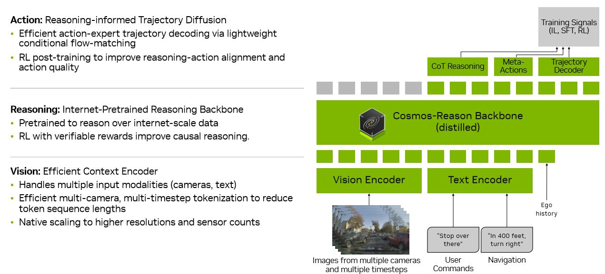
図1：Alpamayo-R1 アーキテクチャの概要。マルチカメラ画像と自車運動は視覚エンコーダで処理されて視覚トークンとなり、テキスト入力とともに VLM バックボーン（Cosmos-Reason）に入力される。モデルは思考の連鎖による推論と離散的な軌道トークンを自己回帰的に生成する。推論時には、フローマッチングを用いるアクションエキスパートのデコーダが、推論出力を条件として、離散的な軌道トークンを連続的で運動学的に実行可能なウェイポイントへ変換する。
図中ラベル：Action: Reasoning-informed Trajectory Diffusion＝行動：推論に基づく軌道拡散、Efficient action-expert trajectory decoding via lightweight conditional flow-matching＝軽量な条件付きフローマッチングによる効率的なアクションエキスパート軌道デコード、RL post-training to improve reasoning-action alignment and action quality＝推論と行動の整合性および行動の質を向上させる RL 事後学習、Reasoning: Internet-Pretrained Reasoning Backbone＝推論：インターネットで事前学習された推論バックボーン、Pretrained to reason over internet-scale data＝インターネット規模のデータで推論するよう事前学習、RL with verifiable rewards improve causal reasoning.＝検証可能な報酬による RL が因果推論を改善、Vision: Efficient Context Encoder＝視覚：効率的なコンテキストエンコーダ、Handles multiple input modalities (cameras, text)＝複数の入力モダリティ（カメラ、テキスト）を扱う、Efficient multi-camera, multi-timestep tokenization to reduce token sequence lengths＝トークン系列長を削減する効率的なマルチカメラ・マルチタイムステップのトークン化、Native scaling to higher resolutions and sensor counts＝より高い解像度とセンサ数へのネイティブなスケーリング、Training Signals (IL, SFT, RL)＝学習信号（IL、SFT、RL）、CoT Reasoning＝CoT 推論、Meta-Actions＝メタ行動、Trajectory Decoder＝軌道デコーダ、Cosmos-Reason Backbone (distilled)＝Cosmos-Reason バックボーン（蒸留版）、Vision Encoder＝視覚エンコーダ、Text Encoder＝テキストエンコーダ、Ego history＝自車の履歴、Images from multiple cameras and multiple timesteps＝複数カメラ・複数タイムステップの画像、"Stop over there"＝「あそこで停まって」、User Commands＝ユーザコマンド、"In 400 feet, turn right"＝「400 フィート先、右折です」、Navigation＝ナビゲーション
推論 VLA の発展に動機付けられ、近年の研究は一般的な VLA データセットから、自車の行動に対して明示的な説明が与えられる推論指向のデータセットへと移行してきた。初期の取り組みとして、BDD-X（Kim et al., 2018）は運転者の挙動を説明する、人間が書いた小規模な説明の集合を提供している。LLM/VLM の大幅な進歩に伴い、DriveGPT4（Xu et al., 2024）、CoVLA（Arai et al., 2025）、LingoQA（Marcu et al., 2024）などの後続研究は、推論データの言語的表現力を豊かにするために、自動化された、あるいは人間参加型のパイプラインを導入している。知覚・予測・計画にわたる推論プロセス全体を捉えるため、DriveCoT（Wang et al., 2024）、Nuinstruct（Ding et al., 2024）、Reason2drive（Nie et al., 2024）、DriveLM（Sima et al., 2024）、DriveLMM-o1（Ishaq et al., 2025）、Senna（Jiang et al., 2024）は、データ構築のための明示的な連鎖ベースの推論パイプラインを開発している。並行して、Impromptu VLA（Chi et al., 2025）は非構造化道路場面における推論データのキュレーションに焦点を当てている。しかし、これらのデータセットには、推論トレースにおいて観測と行動の間の因果関係を強制するという点で、依然として重要な限界がある。例えば、自由形式の推論トレースは、実行可能な運転上の意思決定を特定する代わりに、「自車は注意して…に気を付けるべきである」のような曖昧な記述を用いる傾向がある。さらに、多くの推論トレースは「晴天」、「広い道路」、「…交通規則のため」のような表面的な因果要因を含んでいたり、ラベリング過程で動画クリップ全体を見せて観測不可能な未来の事象に言及することで因果の混同を引き起こしたりしている。これらの問題は、明示的で、意思決定に根ざし、因果的に結び付いた推論トレースを持つデータセットの必要性を浮き彫りにしており、我々が提案する CoC データパイプラインの動機となっている。
3 推論 VLA アーキテクチャの構築
自動運転のための効果的で推論能力を備えた VLA を構築するには、現在の汎用 VLM（Achiam et al., 2023；Comanici et al., 2025）が提供する以上のいくつかの新しい能力を実現する必要がある。第一に、自動運転車は 360 度の状況認識を達成するためにマルチカメラ・マルチタイムステップの観測に依存するが、標準的な VLM は通常、明示的な時間方向や視点間の推論なしに画像や動画フレームを独立に処理するため、マルチカメラ入力を扱う際に実時間推論を妨げるほどの膨大なトークン数となる。第二に、運転上の意思決定は自由形式の叙述ではなく因果的に構造化された推論（Wei et al., 2022）に根拠付けられていなければならない。モデルは、履歴ウィンドウ内の観測可能な証拠に基づいて、ある操作がなぜ安全かつ合法であるかを説明しなければならない。第三に、モデルは精密で多峰的な軌道予測を実時間で生成しなければならない。ウェイポイントをテキストトークンとして自己回帰的にデコードすることは非効率であり、安全な車両制御に不可欠な幾何学的・運動学的制約を欠いている（Driess et al., 2025）。最後に、ロングテール場面での安全性を確保するため、推論トレースは実行される行動と整合していなければならない。
これらの課題に対処するため、我々は Alpamayo-R1（AR1）を提案する。これは Alpamayo-VA（Wu, 2025）を拡張し、自動運転のために推論と行動予測を統合するモジュール型 VLA アーキテクチャである。我々の設計思想は柔軟性とモジュール性を重視している。すなわち、このアーキテクチャは任意の既製 VLM バックボーンを採用でき、同時に効率的な視覚エンコーディングと実時間の行動デコードのためのドメイン固有の構成要素を組み込むことができる。このモジュール性により、視覚言語事前学習の進歩（NVIDIA et al., 2025；Bai et al., 2025）を活用しつつ、自動運転のために高レベルの推論と低レベルの制御を効率的に橋渡しすることができる。
問題の定式化。マルチカメラ画像 \(\boldsymbol{o}_{\text{image}}\) と自車運動の履歴 \(\boldsymbol{o}_{\text{egomotion}}\) を含む、タイムスタンプ \(T\)（以下では省略）までの過去の観測の系列 \(\boldsymbol{o}\) が与えられたとき、AR1 は \(\textsc{Reason}\) と表記される推論を行い、自車の将来軌道 \(\boldsymbol{\tau}\) を予測するよう訓練される。我々はこのタスクを逐次予測問題として定式化し、系列全体を次のように構成する。
\[ [\boldsymbol{o}_{\text{image}}, \boldsymbol{o}_{\text{egomotion}}, \textsc{Reason}, \boldsymbol{\tau}], \tag{1} \]
ここで各構成要素はそれ以前のすべての構成要素に条件付けられる。デフォルトでは、モデルは 6.4 秒間の将来軌道系列全体
\[ \boldsymbol{\tau} = \{(x^i, y^i, \theta^i_{\text{yaw}})\}_{i=1}^{64}, \tag{2} \]
を予測するよう訓練される。ここで \((x^i, y^i, \theta^i_{\text{yaw}})\) は、時刻 \(T\) における自車座標系で 10 Hz でサンプリングされた \(i\) 番目の将来ウェイポイントを表す。第 3.2.2 節で詳述するように、我々は制御入力
\[ \boldsymbol{a} = \{(a^i, \kappa^i)\}_{i=1}^{64}, \tag{3} \]
を持つユニサイクル（一輪車）ダイナミクスを用いた制御ベースの表現を採用する。ここで \(a^i\) と \(\kappa^i\) はそれぞれタイムステップ \(i\) における加速度と曲率を表す。\(\boldsymbol{\tau}\) のエンコードおよびデコードの方法の詳細は第 3.2.2 節と第 5.1 節に示す。
全体アーキテクチャ。図1 に AR1 のエンドツーエンドのアーキテクチャを示す。本システムは、マルチカメラ・マルチタイムステップの観測を視覚入力として処理し、必要に応じてユーザコマンドや高レベルのナビゲーション指示などのテキスト入力で補強する。過去の自車運動データを含むすべての入力は、あらかじめ定められた順序に従ってマルチモーダルトークンの統一された系列へとトークン化される。これらのトークンは次に Cosmos-Reason（NVIDIA et al., 2025）バックボーンによって処理され、推論トレース、メタ行動、予測された将来軌道を表す出力トークンが生成される。モデルは、第 5 節で述べるように、教師ありファインチューニング（SFT）と RL を組み合わせた複数の段階で訓練される。
3.1 VLM バックボーン：Cosmos-Reason
我々は Alpamayo-R1 の VLM バックボーンとして Cosmos-Reason（NVIDIA et al., 2025）を採用する。Cosmos-Reason はフィジカル AI 応用のために特別に設計された VLM であり、物理的な常識と身体性を伴う推論能力を養うために 370 万件の視覚質問応答（VQA）サンプルで事後学習されている。このモデルには、場面の記述、運転の難易度のアノテーション、および次の行動を予測するために DeepSeek-R1（DeepSeek-AI, 2025）から蒸留された推論トレースを含む、運転場面に焦点を当てた 2.47 万件の厳選された動画 VQA サンプルが取り込まれている。
ドメイン固有の教師ありファインチューニング。自動運転への展開に向けて Cosmos-Reason をさらに強化するため、我々は自動運転、ロボティクス、ヘルスケア、スマートシティ、製造、小売、物流を含む複数のフィジカル AI ドメインにわたる補助データセットをキュレーションする。この幅広いフィジカル AI 事前学習により、モデルは運転場面へ転移する一般的な物理的常識と身体性を伴う推論能力を養うことができる。特に自動運転に関しては、環境内の重要な物体のアノテーションと次の行動に対する推論を含む 10 万件の新しいサンプルで学習データを拡張する。
運転に焦点を当てたデータキュレーション。我々は、自動運転のために品質と規模のバランスをとる相補的なラベリング手法を開発する。
- 人手でラベル付けされたデータは、運行設計領域（天候、照明、路面状況）、交通法規（信号機、標識）、自車の挙動（相互作用的および非相互作用的なメタ行動）、自車の挙動に影響する重要な物体、および観測された操作の背後にある因果推論を網羅する包括的なアノテーションを含む。これらのラベルは、複雑な運転場面におけるモデルの理解と推論を向上させる。
- 自動でラベル付けされたデータは、自車の挙動の推論と予測に焦点を当てており、縦方向・横方向・車線関連のメタ行動を速度情報とともに符号化した運転固有の事前知識を用いて教師 VLM（例えば Qwen3-VL（Qwen Team, 2025））にプロンプトを与えることで生成される。このスケーラブルな手法は、モデルの予測的推論能力を強化する。
3.2 ドメイン固有の適応
Cosmos-Reason は強固な基盤を提供するが、実世界での自動運転の展開に向けては 2 つの重大なギャップが残っている。すなわち、マルチカメラ・マルチタイムステップ入力のための効率的な視覚エンコーディングと、実時間制御のための精密な軌道デコードである。以下の小節では、これらの課題に対処するドメイン固有の構成要素を詳述する。
3.2.1 視覚エンコーディング
VLM における視覚エンコーダの主な役割は、入力画像を、後段で LLM バックボーンが処理するためのトークンのストリームへ変換することである。しかし、VLA は車載での展開を対象とするため、その視覚エンコーダに対する重要な要件は、環境から関連する意味情報を保持しつつ、できるだけ少ないトークンを生成することである。これを達成するために、さまざまな視覚トークン化手法が提案されてきた。それらは主に、推論ステップあたりにどれだけの情報を符号化するか（すなわち、何枚の画像を何個のトークンに圧縮するか）と、それに関連するアーキテクチャ上の選択において異なる。
本節では、AR1 が利用できるさまざまな視覚エンコーダとそのトレードオフについて論じるとともに、より大きなバックボーンでの実時間の車載推論を可能にするための、さらなるトークン数圧縮の方策についても論じる。
単一画像トークン化。多くの視覚トークナイザは主に単一画像の表現に焦点を当てており、オートエンコーディングのアーキテクチャを用いる（Sohn et al., 2015；van den Oord et al., 2017；Esser et al., 2021）か、ピクセルのパッチを直接符号化する（Dosovitskiy et al., 2020）。VLM は主に後者を採用しており、Vision Transformer（ViT）（Dosovitskiy et al., 2020）を用いて画像をパッチに分割し、それらを符号化して 1 次元のトークン系列を形成する。我々はこのパラダイムを単一画像トークン化と呼ぶ。このパラダイムでは、モデルは各入力フレームをトークンの集合へと符号化する。
AR1 のデフォルトのトークナイザ（以降のすべての実験で用いるもの）はこのパラダイムを活用し、ベース VLM の視覚エンコーダ（例えば Zhai et al.（2023）；Tschannen et al.（2025））を用いて \(W \times H\) px の入力画像をパッチ特徴 \(\mathbf{f} \in \mathbb{R}^{W/14 \times H/14 \times D}\) に符号化し、それを 2 倍の双線形ダウンサンプリングによって画像あたり \(\mathbf{f}' \in \mathbb{R}^{W/28 \times H/28 \times D}\) の特徴にする。例として、\(W = 448, H = 280\) の場合、この処理は画像あたり 160 トークンを生成する。
マルチカメラトークン化。単一画像トークン化は実装が簡単であるが、画像解像度とカメラ数に対して線形に増加するトークン数を生み出す（Wang et al., 2025）。周囲の 360 度の視野を得るために、AV はしばしば 6〜10 台のカメラを用いるが、そのパッチベースのトークン化はタイムステップあたり数千のトークンを生じ、実時間推論を妨げる。そこで AR1 は、複数のカメラからの画像を中間表現へと符号化してからその表現をトークン化する、新しい系統の効率的なマルチカメラトークナイザの使用もサポートする。
具体的には、AR1 はさらに、Ivanovic et al.（2025）で提案された効率的なマルチカメラトークナイザを使用できる。これは 3 次元の帰納バイアスとしてトライプレーンを活用し、複数のカメラ画像を効率的に同時に表現する。重要なことに、トライプレーンのサイズは固定されているため、入力カメラ数とその解像度は結果として得られるトークン数から切り離される。形式的には、グリッドサイズ \(S_x, S_y, S_z\) と後段のパッチ化の値 \(p_x, p_y, p_z\) を持つトライプレーンに対して、トークナイザが生成するトークン数は次のとおりである。
\[ \underbrace{\left(\frac{S_x - p_x}{p_x} + 1\right)\left(\frac{S_y - p_y}{p_y} + 1\right)}_{xy\ \text{平面のパッチ数}} + \underbrace{\left(\frac{S_x - p_x}{p_x} + 1\right)\left(\frac{S_z - p_z}{p_z} + 1\right)}_{xz\ \text{平面のパッチ数}} + \underbrace{\left(\frac{S_y - p_y}{p_y} + 1\right)\left(\frac{S_z - p_z}{p_z} + 1\right)}_{yz\ \text{平面のパッチ数}}. \tag{4} \]
例として、\(S_x = S_y = 96, S_z = 48\)、\(p_x = p_y = p_z = 8\) の場合、カメラ数やその解像度に関係なく、1 タイムステップの観測を表現するのに必要なトークンはわずか 288 個である。7 カメラの車両構成では、これは画像あたり約 \(41.1\) トークンに相当する（単一画像トークン化の \(3.9\times\) 分の 1）。さらに、第 6.7 節で示すように、この効率はエンドツーエンドの運転指標を大きく損なうことなく達成される。
マルチカメラ動画トークン化。上記によってすでにセンサ観測を表現するのに必要なトークン数は大幅に削減されるが、さらなる効率化を達成できる根本的な領域がまだ 2 つある。
- 時間情報を考慮すること（例えば、フレーム間で情報に冗長性が存在しうる）。
- 構造化された特徴表現を用いることに伴う潜在的な性能上限を取り除くこと。
そこで AR1 は、複数のタイムステップにわたるカメラ観測の系列全体を直接符号化するマルチカメラ動画トークナイザの使用もサポートする。その一例が Flex（Yang et al., 2025）であり、これは完全な自己注意層と固定されたクエリベクトルの集合によって、複数のカメラとタイムステップからの画像トークンの集合を圧縮し、情報ボトルネックの大きさを制御する明示的なメカニズムを提供する。第 6.7 節で示すように、この手法は、下流の運転指標を維持あるいは向上させつつ、（単一画像トークン化と比較して）最大 \(20\times\) のトークン圧縮率を達成できる。
トークン圧縮のためのその他の方策。上述のトークン化戦略に加えて、いくつかの相補的な手法によってトークン数をさらに削減できる。SparseVILA（Khaki et al., 2025）に代表される事後学習のトークン枝刈り手法は、再学習なしに推論中に冗長なトークンを動的に特定して除去し、学習済みのモデルの計算コストを削減する実用的な道筋を提供する。これらの手法は、実時間性能の制約を維持しつつ AR1 をさらに大きなバックボーンへとスケールさせるための有望な方向性である。
3.2.2 軌道デコード
VLM の能力を物理世界で効果的に動作するよう拡張するには、自動運転の文脈では将来の運転軌道に相当する物理的行動を VLA の学習に組み込むことが不可欠である。しかし、身体性は行動のデコードに特有の課題をもたらす。
- 行動表現は正確でなければならず、忠実性と多峰性の両方を保持しなければならない。
- デコード処理は実時間推論を支えられるほど高速でなければならない。
- デコードのメカニズムは VLA の学習パイプラインに継ぎ目なく統合されるべきである。
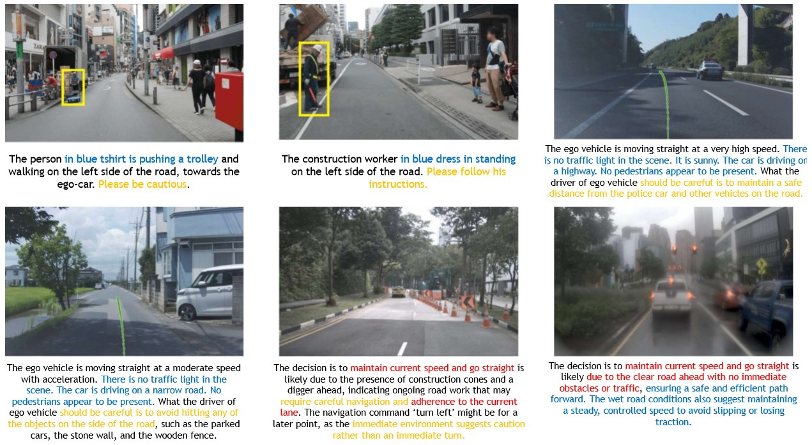
図2：既存のデータセット（Malla et al., 2023；Chi et al., 2025；Arai et al., 2025）に見られる典型的な問題を示す推論トレースの例。黄色で強調されたテキストは、軌道と相関する具体的な運転上の意思決定を特定できていない曖昧な挙動記述を示す。青色で強調されたテキストは、自車の意思決定に直接寄与しない文脈的な観測などの表面的な推論を示す。赤色の強調は、自車の実際の挙動と矛盾する、誤った、あるいは因果的に一貫しない推論を示す。
図中テキスト（上段左から）：「青いTシャツの人物が台車を押しながら道路の左側を自車に向かって歩いている。注意してください。」／「青い服を着た工事作業員が道路の左側に立っている。その指示に従ってください。」／「自車は非常に高速で直進している。場面に信号機はない。晴天である。車は高速道路を走行している。歩行者はいないようである。自車の運転者はパトカーや道路上の他車両と安全な距離を保つよう注意すべきである。」（下段左から）「自車は中程度の速度で加速しながら直進している。場面に信号機はない。車は狭い道路を走行している。歩行者はいないようである。自車の運転者は、駐車中の車、石垣、木製の柵など、道路脇の物体に衝突しないよう注意すべきである。」／「現在の速度を維持して直進するという判断は、前方に工事用コーンと掘削機があり、慎重な走行と現在の車線の維持を必要としうる進行中の道路工事を示していることによると考えられる。ナビゲーションの指示『左折』は、直近の環境が即座の旋回ではなく注意を促していることから、もっと先の地点に対するものかもしれない。」／「現在の速度を維持して直進するという判断は、前方の道路が空いていて直近の障害物や交通がないことによると考えられ、安全で効率的な進路を確保している。濡れた路面状況も、スリップやトラクションの喪失を避けるために安定して制御された速度を維持することを示唆している。」
当初、我々は生の位置（すなわち \(x, y\)）のウェイポイント空間でモデルを訓練するとセンサノイズの影響を受けやすく、それがしばしばモデルの収束を悪化させることを見出した。さらに、後段の低レベル車両制御器は、車上での一貫した安定な実行を確保するために、通常は軌道出力を平滑化する。そこで、生の位置ウェイポイント空間で \(\boldsymbol{\tau}\) を直接学習する代わりに、より良いクローズドループ性能につながる、ユニサイクルダイナミクスに支配される行動表現を採用する。具体的には、制御入力 \(\boldsymbol{a} = \{(a^i, \kappa^i)\}_{i=1}^{64}\) を持つ次のユニサイクルダイナミクス（Lynch and Park, 2017）を用い、オイラー離散化を適用する。
\[ \mathbf{x}^{i+1} = \begin{pmatrix} x^{i+1} \\ y^{i+1} \\ \theta^{i+1} \\ v^{i+1} \end{pmatrix} = \begin{pmatrix} x^i + \frac{\Delta T}{2}\left(v^i \cos\theta^i + v^{i+1}\cos\theta^{i+1}\right) \\ y^i + \frac{\Delta T}{2}\left(v^i \sin\theta^i + v^{i+1}\sin\theta^{i+1}\right) \\ \theta^i + \Delta T\, \kappa^i v^i + \frac{\Delta T^2}{2}\kappa^i a^i \\ v^i + \Delta T\, a^i \end{pmatrix}, \tag{5} \]
ここで本設定では \(\Delta T = 0.1\)s であり、\(x\) と \(y\) は鳥瞰図（BEV）平面における位置ウェイポイント、\(\theta\) はヨー角、\(v\) は速度、\(\kappa\) は曲率、\(a\) は加速度を表す。学習時には、正解の制御系列 \(\boldsymbol{a}\) は、高周波ノイズを減衰させるために Tikhonov 正則化付きの最小二乗定式化によって \(\boldsymbol{\tau}\) から導出される。モデルは制御系列 \(\boldsymbol{a}\) を予測するよう訓練され、推論時には式（5）を適用してそれを \(\boldsymbol{\tau}\) へ写像する。
さらに、AR1 が軌道を理解し生成できるようにするため、\(\boldsymbol{\tau}\) を離散トークンまたは連続埋め込みのいずれかとして符号化する。離散表現では、\(\boldsymbol{a}\) の各連続値を、あらかじめ定めた範囲内で等間隔のビンに一様に量子化し、得られたインデックスを特殊トークンとして表現する。連続表現では、正弦波位置エンコーディングとそれに続く MLP 射影を用いて \(\boldsymbol{a}\) を AR1 の埋め込み空間へ写像する。具体的には、\(\pi_{0.5}\)-KI（Driess et al., 2025）に着想を得た戦略を採用し、VLM 内で学習される離散的な軌道トークンと、フローマッチングのフレームワーク（Lipman et al., 2023）を用いて同じ軌道を連続的な表現へデコードするアクションエキスパートとを組み合わせる。このフレームワークは、VLM の学習を簡素化し、軌道デコードを高速化し、より良いクローズドループ性能を達成する。行動モダリティの注入の学習の詳細は第 5.1 節に示す。
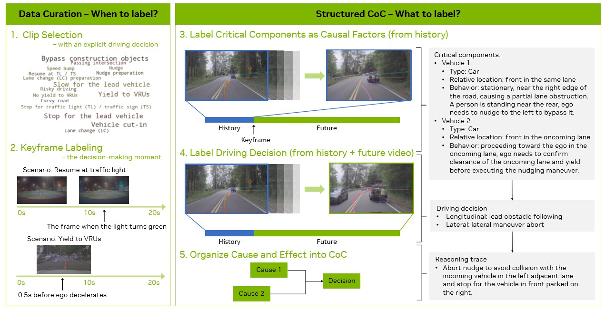
図3：提案する構造化 CoC ラベリングパイプラインの概要。これは 5 つのステップから成る。（1）クリップ選択：明示的な運転上の意思決定を含むクリップを選択し、因果情報の乏しい低信号のクリップを除外する。（2）キーフレームのラベリング：各動画クリップ内の意思決定の瞬間を特定し、潜在的な因果の混同を最小化する。（3〜5）構造化 CoC ラベリング：最終的な CoC を構築し、さらに因果の混同を緩和するため、まず将来フレームの因果要因への言及を避けつつ観測から重要な構成要素をアノテーションし、次に対応する運転上の意思決定をラベル付けする。その後、運転上の意思決定と因果要因から自然言語で推論トレースを構成する。
図中ラベル：Data Curation – When to label?＝データキュレーション：いつラベル付けするか？、1. Clip Selection – with an explicit driving decision＝1. クリップ選択：明示的な運転上の意思決定を含むもの、（ワードクラウド）Bypass construction objects＝工事物体の回避、Passing intersection＝交差点の通過、Speed bump＝スピードバンプ、Nudge＝ナッジ（わずかな横移動）、Resume at TL / TS＝信号機／標識での発進再開、Nudge preparation＝ナッジの準備、Lane change (LC) preparation＝車線変更（LC）の準備、Slow for the lead vehicle＝先行車に対する減速、Risky driving＝危険な運転、Yield to VRUs＝交通弱者（VRU）への譲歩、No yield to VRUs＝交通弱者に譲らない、Curvy road＝曲がりくねった道路、Stop for traffic light (TL) / traffic sign (TS)＝信号機（TL）／交通標識（TS）での停止、Stop for the lead vehicle＝先行車に対する停止、Vehicle cut-in＝車両の割り込み、Lane change (LC)＝車線変更（LC）、2. Keyframe Labeling – the decision-making moment＝2. キーフレームのラベリング：意思決定の瞬間、Scenario: Resume at traffic light＝シナリオ：信号での発進再開、The frame when the light turns green＝信号が青に変わるフレーム、Scenario: Yield to VRUs＝シナリオ：交通弱者への譲歩、0.5s before ego decelerates＝自車が減速する 0.5 秒前、Structured CoC – What to label?＝構造化 CoC：何をラベル付けするか？、3. Label Critical Components as Causal Factors (from history)＝3. 重要な構成要素を因果要因としてラベル付け（履歴から）、History＝履歴、Future＝将来、Keyframe＝キーフレーム、4. Label Driving Decision (from history + future video)＝4. 運転上の意思決定をラベル付け（履歴＋将来の動画から）、5. Organize Cause and Effect into CoC＝5. 原因と結果を CoC に整理、Cause 1／Cause 2＝原因 1／原因 2、Decision＝意思決定、Critical components＝重要な構成要素、Vehicle 1: Type: Car; Relative location: front in the same lane; Behavior: stationary, near the right edge of the road, causing a partial lane obstruction. A person is standing near the rear, ego needs to nudge to the left to bypass it.＝車両 1：種別：乗用車、相対位置：同一車線の前方、挙動：道路の右端付近で静止しており、車線を部分的に塞いでいる。後部付近に人が立っており、自車はこれを回避するため左へナッジする必要がある、Vehicle 2: Type: Car; Relative location: front in the oncoming lane; Behavior: proceeding toward the ego in the oncoming lane, ego needs to confirm clearance of the oncoming lane and yield before executing the nudging maneuver.＝車両 2：種別：乗用車、相対位置：対向車線の前方、挙動：対向車線を自車に向かって進行しており、自車はナッジ操作を実行する前に対向車線が空いていることを確認して譲る必要がある、Driving decision: Longitudinal: lead obstacle following; Lateral: lateral maneuver abort＝運転上の意思決定：縦方向：先行障害物への追従、横方向：横方向操作の中止、Reasoning trace: Abort nudge to avoid collision with the incoming vehicle in the left adjacent lane and stop for the vehicle in front parked on the right.＝推論トレース：左隣接車線から来る車両との衝突を避けるためナッジを中止し、右側に駐車している前方の車両の手前で停止する。
まとめ。本節では、VLM を AV の方策 VLA へ体系的に適応させるための 2 つの主要な設計次元（視覚エンコーディングと行動デコード）をさらに詳しく述べた。以降の節では、データパイプラインの構築と学習戦略の定式化について詳述する。これらは合わせて、モデルに強化された推論能力とアライメント能力を与え、それによってロングテール事象の扱いにおける頑健性を向上させる。
4 Chain of Causation データセット：因果的に根拠付けられた推論 VLA の学習
推論 VLA モデルが運転行動の原因を説明し、軌道レベルの性能を向上させられるようにするには、推論データが自車の軌道と密接に相関していなければならない。しかし、AV コミュニティにおける既存の CoT 推論データセットは、図2 に示すように、しばしばいくつかの限界を示す。
- 曖昧な挙動記述：自由形式の CoT アノテーションは、具体的な運転行動を特定できなかったり、自車の軌道と弱くしか相関しない語を選んだりすることがある。
- 表面的な推論：一部の推論トレースは、自車の挙動との直接的な因果的つながりを欠く文脈的な観測や仮定的な要因を主に記述しており、事後学習による運転性能の向上にはあまり役立たない。
- 因果の混同：推論トレースには、学習時にモデルが観測できない将来の時間窓で生じる因果要因が含まれることがある。これは、ラベリング過程でしばしば履歴部分と将来部分を区別せずに動画全体を見せてしまうために生じる。
これらのギャップに対処するため、推論トレースに明示的な因果構造を強制するラベリングフレームワークを導入する。まず、低レベルの自車軌道に直接対応する高レベルの運転上の意思決定の包括的な集合を定義する。各推論トレースは明示的な運転上の意思決定と関連付けられ、その運転上の意思決定を動機付けた因果要因のみを含む。履歴部分と将来部分の動画セグメントを分割するキーフレームを注意深く選択することで、すべての因果要因が観測可能な履歴ウィンドウ内に由来することを保証し、それによって因果の混同を防ぐ。この設計により、すべての推論トレースが意思決定に根ざし（decision-grounded）、かつ因果的に結び付いた（causally linked）ものとなり、冗長な記述的叙述ではなく、簡潔で解釈可能な因果関係を捉えることが保証される。こうして得られたデータセットを Chain of Causation（CoC）データセットと呼ぶ。これは意思決定の因果性を学習するための明確な教師信号を提供し、推論 VLA が車載推論中に特定の運転行動の原因について効率的に推論できるようにする。我々のラベリングパイプラインの概要を図3 に示す。
| 種別 | 運転上の意思決定 | 定義 |
|---|---|---|
| 縦方向 | 設定速度の追従（Set speed tracking） | 制約がないときに目標速度を維持または到達する。追従／譲歩／停止のロジックは除く。 |
| 先行障害物への追従（Lead obstacle following） | 先行する対象（同じ交通流の中で動く経路上の最も近い対象）に対して安全な車間時間を維持する。幾何形状に基づく減速、ギャップ合わせ、先行対象以外への譲歩は除く。 | |
| 速度適応（道路事象）（Speed adaptation (road events)） | 道路の特徴（カーブ、勾配、段差、ランプ、ラウンドアバウト、旋回）に合わせて速度を調整する。先行対象とは無関係。 | |
| ギャップ探索（LC／合流／ジッパー合流のため）（Gap-searching (for LC/merge/zipper)） | 計画された横方向操作を支えるため、目標となる交通流に合わせて速度を調整する、または利用可能なギャップを作る。 | |
| 追い越しのための加速（Acceleration for passing/overtaking） | 関連する横方向の計画を伴って、より遅い先行車を追い越すために速度を上げる。 | |
| 譲歩（エージェントの優先通行権）（Yield (agent right-of-way)） | 特定のエージェント（歩行者、交差交通、緊急車両、割り込み車両）に優先権を譲るために減速／停止する。 | |
| 静的制約による停止（Stop for static constraints） | 制御点（停止線／譲れ線、赤信号、スクールバス／踏切の規則）まで減速し、そこで停止を保持する。衝突を避けるために、優先通行権を持っている場合でも譲歩が必要なことがある。 | |
| 横方向 | 車線維持と中央保持（Lane keeping & centering） | 車線境界内に位置を維持する。車線内のわずかなオフセットは許容されるが、車線境界線を越えることはない。 |
| 合流／分流（道路施設の変更）（Merge / Split (facility change)） | 道路施設間の移行（例えば、流入ランプ ↔ 本線、織り込み区間）。同一道路での車線変更ではない。 | |
| 車線外へのナッジ（はみ出し回避）（Out-of-lane nudge (straddle avoidance)） | 障害物／危険の周囲の余裕を広げるための、短時間の意図的な車線境界線の横断。元の車線に戻る。左／右を明記する。 | |
| 車線内ナッジ（In-lane nudge） | 障害物／危険の周囲の余裕を広げるための、車線内での一時的なオフセット（境界線は越えない）。左／右を明記する。 | |
| 車線変更（横方向への移動）（Lane change (lateral push)） | ギャップの調整を伴う隣接車線への完全な移行。推論トレースで左／右を明記する。 | |
| 路肩への寄せ／縁石への接近（Pull-over / curb approach） | 端／路肩または指定された停止エリアへ向かって移動する（乗車、緊急停止、駐車への接近）。 | |
| 旋回（交差点／ラウンドアバウト／U ターン）（Turn (intersection/roundabout/U-turn)） | 大きな方位変化を伴って別の道路区間へ入る計画経路。左／右を明記する。 | |
| 横方向操作の中止（Lateral maneuver abort） | 進行中の横方向操作（ナッジ、車線変更、合流／分流、路肩への寄せ）を取り消し、安全なときに車線中央に戻る。 |
表1：推論トレースを明示的な制御意図に結び付けるために用いる、閉じた集合の運転上の意思決定（縦方向と横方向）。アノテータはチャネルごとに最大 1 つの意思決定（または None）を選択し、意思決定に根ざした教師信号を保証する。定義は運用上の意図を重視し、視覚的または挙動的に類似した操作（例えば Lead obstacle following と Yield、Lane change と Merge / Split）を区別する。選択された各意思決定は、観測された履歴ウィンドウからの証拠によって因果的に裏付けられていなければならない。LC は車線変更を表す。
4.1 構造化された Chain of Causation
効率的なアノテーションを促進するため、我々のラベリングフレームワークは各データサンプルを 3 つの構造化された構成要素、すなわち運転上の意思決定、因果要因（重要な構成要素）、および構成された CoC トレースに分解する。その結果、各データインスタンスはこれら 3 つの構成要素を包含する構造化 CoC サンプルとなる。
運転上の意思決定。CoC データが意思決定に根ざしたものとなるよう、表1 のように高レベルの運転上の意思決定の閉じた集合を定義する。各クリップには、重要な推論の瞬間の直後に自車がとる最初の行動に対応する、最大 1 つの縦方向の意思決定と 1 つの横方向の意思決定（またはいずれかのチャネルについて None）がアノテーションされる。この標準化された一覧は低レベルの軌道と直接整合し、運転行動に関する自由形式の曖昧な記述を排除して、すべての推論トレースがどの意思決定がとられたかを曖昧さなく特定することを保証する。言語的な一貫性と多様性のため、最終的な CoC 推論トレースは、これらの運転上の意思決定と整合したコンパクトな動詞の集合を用いて構成される。
| カテゴリ | 記録する属性の例（意思決定に関連する場合） | 不確実性 |
|---|---|---|
| 重要な物体 | 種別（車両／歩行者／自転車／VRU）、自車に対する相対姿勢（経路上、左／右、対向、横断歩道）、動き（停止、減速中、横断中、割り込みのリスク） | Low / High |
| 信号機 | 現在の状態（赤／黄／青）、矢印の状態、視認性／遮蔽、停止線の有無 | - |
| 譲歩／停止の制御 | 標識の有無、全方向停止か二方向停止か、停止線／譲れ線の位置 | - |
| 道路事象 | 前方の曲率／勾配、スピードバンプ、幅員減少、ラウンドアバウト、ランプ／ジャンクション | - |
| 車線／車線境界線 | 車線数、車線境界線の種類（破線／実線）、路肩／自転車レーン、利用可能な幅 | - |
| 経路の意図 | 目標車線／旋回（左／右／直進）、直近の分流／合流、操作に必要な車線 | - |
| ODD の制約 | 天候／視界、工事、緊急車両、スクールバス／踏切の規則 | - |
表2：運転上の意思決定の因果要因となりうる重要な構成要素のカテゴリと属性の例。運転上の意思決定に直接影響するものだけをラベル付けする。物体の挙動を予測する場合や信号が部分的に遮蔽されている場合には、Low/High の不確実性タグを用いる。このリストは開かれており、必要に応じて重要な構成要素を追加できる。
重要な構成要素。閉じた集合の運転上の意思決定とは対照的に、因果要因は開かれた集合として定義され、そのカテゴリと属性の例を表2 に示す。この設計により、人手のラベラまたは自動ラベリングパイプラインは、構造化された出力を維持しつつ、運転上の意思決定に直接影響する主要な要素だけを柔軟に指定できる。
構成された CoC トレース。運転上の意思決定と重要な構成要素が特定されると、それらは選ばれた意思決定の背後にある因果的根拠を捉える、首尾一貫した CoC 推論トレースへと言語的に整理される。その結果、構造化 CoC プロトコルは次を強制する。
- 意思決定への根拠付け：各推論トレースは、重要な瞬間における単一の明示的な意思決定に結び付けられる。
- 因果の局所性：すべての証拠は観測された履歴ウィンドウに由来しなければならない。
- アノテーションの経済性：意思決定に関連する要因だけが含まれる。
4.2 データキュレーション
CoC の構造化された構成要素（運転上の意思決定、重要な構成要素、構成された CoC トレース）を定義したので、次のステップは、これらの推論データをいつラベル付けすべきかを決定することである。すべての動画クリップがアノテーションに値するわけではない。ラベリングは、観測可能な要因と自車のその後の意思決定との間に明確な因果的つながりを確立できる瞬間にのみ実行される。したがって、我々のデータラベリングフレームワークの重要な側面はデータキュレーションであり、これはこうした重要な推論の瞬間を特定することを含む。
クリップ選択。CoC データセットのラベル付けには明示的な運転上の意思決定を含むクリップを選び、それによって因果情報の乏しい低信号のクリップを避ける。これらのクリップは 2 種類のシナリオに分類される。（1）反応的（Reactive）：先行車や赤信号で停止する、あるいは近くの障害物や危険から余裕を保つために横方向の位置を調整するなど、自車が特定の事象に応じて直ちに挙動を適応させなければならないもの。（2）先行的（Proactive）：自車は即座に反応する必要はないが、今後の道路事象や障害物のために、操作の調整の可能性を能動的に評価し予期しなければならないもの。例えば、自車が車線変更の経路指示を受けたが目標車線に十分なスペースがなく、車線変更操作に備えて継続的なギャップ探索とスペースの評価が必要となる場合である。我々はルールベースの手法を用いて各シナリオに対応するクリップを特定し、データセットの多様性を確保するためにシナリオごとのクリップ数を均衡させる。シナリオの詳細な定義は表3 に示す。
| 種別 | シナリオ名 | キーフレームの定義（反応的）／キーフレーム範囲（先行的） |
|---|---|---|
| 反応的 | 先行車に対する減速（Slow for the lead vehicle） | 自車が先行車の後方で減速する 0.5 秒前。 |
| 先行車に対する停止（Stop for the lead vehicle） | 上と同じ。 | |
| 信号機（TL）／交通標識（TS）での停止（Stop for traffic light (TL) / traffic sign (TS)） | 次のうち遅く生じる方：（1）自車が TL/TS のために減速を開始する 0.5 秒前、または（2）TL の場合、それが黄／赤に変わるフレーム。 | |
| TL／TS での発進再開（Resume at TL / TS） | 次のうち遅く生じる方：（1）自車が TL/TS による停止状態から加速を開始する 0.5 秒前、または（2）TL の場合、それが青に変わるフレーム。 | |
| 車線変更（LC）（Lane change (LC)） | 自車が元の車線の中心から外れ始める 0.5 秒前。 | |
| 交通弱者への譲歩（Yield to VRUs） | 自車が VRU のために減速またはナッジを開始する 0.5 秒前。 | |
| 車両の割り込み（Vehicle cut-in） | 次のうち先に生じる方：（1）競合車両が自車の車線への LC を合図したとき、または（2）ウインカーの合図がない場合に、競合車両が LC のために元の車線の中心から外れ始めたとき。 | |
| スピードバンプ（Speed bump） | 自車が前方のスピードバンプのために減速する 0.5 秒前。 | |
| ナッジ（Nudge） | 自車が障害物を避ける、または障害物に空間を与えるために車線中心から離れる 0.5 秒前。 | |
| 工事物体の回避（Bypass construction objects） | 自車が工事物体に対して減速もしくはナッジする、または車線を変更する工事物体に応じて車線変更する 0.5 秒前。 | |
| 危険な運転（Risky driving） | 自車が危険な事象や障害物（例えば、車線をふらつく先行車、後退して出てくる駐車車両、自車の車線にはみ出してくる対向車）のために減速、ナッジ、または後退する 0.5 秒前。 | |
| 先行的 | 曲がりくねった道路（Curvy road） | 開始：次のうち先に生じる方 ―（1）自車がカーブのために減速を開始する 0.5 秒前、または（2）自車が現在の速度でカーブに進入したとき。終了：自車がカーブを抜けたとき。 |
| 車線変更（LC）の準備（Lane change (LC) preparation） | 開始：自車が LC を行う理由（例えば、経路や遅い先行車の追い越し）を得たが、目標車線が塞がっているため直ちには実行できないとき。終了：ギャップ探索の後、または交通が空いたときに、自車が車線変更の準備を整えたとき。 | |
| ナッジの準備（Nudge preparation） | 開始：自車が障害物のためにナッジする理由を得たが、交通のために直ちには実行できないとき。終了：交通が空いて自車がナッジの準備を整えたとき。 | |
| 交差点の通過（Passing intersection） | 開始：フロントバンパーが停止線または横断歩道の境界を越えて自車が交差点に進入したとき。終了：自車が交差点領域を完全に抜けたとき。 | |
| 交通弱者に譲らない（No yield to VRUs） | 開始：（1）自車が優先通行権を持っている、または（2）VRU が意図的に自車に譲っている、という理由で、横断の意図を持つ VRU が現れたがまだ横断していないとき。終了：VRU が見えなくなったとき。 |
表3：クリップ選択に用いるシナリオと、CoC アノテーションのためのキーフレームおよびキーフレーム範囲の定義。目的は、選択された各クリップ内で、観測可能な要因と自車のその後の意思決定との間に明確な因果的つながりを確立できる重要な推論の瞬間を特定することである。
キーフレームのラベリング。学習と評価の両方で 2 秒間の履歴を用いて 6 秒先の将来を予測するという構成のもとでは、各生クリップは 20 秒間のデータを含み、複数の学習サンプルを生成できる。したがって、CoC アノテーションのためのキーフレームの選択は、意思決定の因果性の明確さを最大化するうえで極めて重要である。反応的シナリオでは、キーフレームは通常、自車が運転上の意思決定に対応する挙動変化を開始する前に短い時間的バッファ（約 0.5 秒）を設けることで選ばれる。このキーフレームの時点で、自車は直前の 2 秒間の履歴内に、これから行う行動を正当化するのに十分な観測を蓄積しており、因果の混同（訳注：原文は "casual confusion" だが "causal confusion" の誤植と判断した）を効果的に回避できる。キーフレームは意思決定の瞬間の直前に位置するため、具体的な運転上の意思決定がデータサンプルに関連付けられることが保証され、意思決定に根ざした CoC トレースのアノテーションが可能になる。先行的シナリオでは、キーフレーム範囲、すなわち自車が潜在的な操作変更を能動的に評価または準備する時間窓をアノテーションする。反応的および先行的シナリオの両方におけるキーフレームまたはキーフレーム範囲の詳細な定義は表3 に示す。CoC 推論トレースは、キーフレームのタイムスタンプ、またはキーフレーム範囲からサンプリングされたキーフレームに対応するサンプルに対してのみアノテーションされる。
| ルール | 運用上のチェック |
|---|---|
| 因果の網羅性（Causal coverage） | 選択された各意思決定は少なくとも 1 つの Stage I の構成要素を参照する。そうでなければ簡潔な正当化とともに UNOBSERVED と記す。 |
| 因果の正しさ（Causal correctness） | 推論トレースは、妥当な因果関係に基づいて、選択された意思決定を論理的に説明しなければならない。循環論法、原因の誤帰属、必要条件の欠落は手直し対象としてフラグを立てる。 |
| 近接原因（Proximate cause） | 背景条件（例えば、列の先頭でないときの赤信号）よりも直接の要因（例えば、停止している先行車）を優先する。 |
| 意思決定の最小性（Decision minimality） | 意思決定に変化がなければ None とラベル付けする。 |
表4：品質チェックおよび監査プロセスのための品質保証（QA）チェックリスト。主要なルールは CoC の要件、すなわち意思決定への根拠付け、因果の局所性、アノテーションの経済性と密接に結び付いている。
4.3 ハイブリッドなラベリング手順
品質とスケーラビリティの両方を確保するため、人手によるラベリングと自動ラベリングを組み合わせたハイブリッドなラベリング手順を開発する。推論 VLA モデルのための大規模な学習データの生成には自動ラベルで十分であるが、さらなる SFT、自動ラベルの評価、モデル評価には、全体の \(\sim 10\%\) 程度の、高品質で人手により検証されたデータが不可欠である。我々が提案するハイブリッドなラベリング手法は効率と精度のバランスをとり、大規模な学習と信頼性の高いモデル評価の両方を支える。
4.3.1 人手によるラベリング
2 段階のラベリング手順。第 4.1 節で述べた構造化 CoC に従い、人間のアノテータは、簡潔で因果的に根拠付けられた CoC 記述を作成するように設計された 2 段階の手順を完了することが求められる。
- Stage I（0〜2 s）：観測された履歴ウィンドウ内（キーフレーム前の 2 秒以内）で、表2 の重要な構成要素を特定する。このステップは、意思決定の瞬間より前に利用可能な証拠だけが考慮されることを保証することで、因果の混同を防ぐのに役立つ。これらの重要な構成要素は、次の段階でアノテーションされる運転上の意思決定に影響しうる。
- Stage II（0〜8 s）：（a）違法または安全でない運転挙動を含む無効なデータを除去するために安全性除外フィルタを適用し、（b）各チャネル（縦方向と横方向、または None）についてキーフレーム後の最初の運転上の意思決定を選択し、（c）運転上の意思決定につながる Stage I で特定された因果要因のみを、該当する場合は経路や規制の信号とともに参照する CoC 推論トレースを記述する。
Stage I と Stage II を明確に分離し、因果の漏洩を最小化するため、履歴の動画セグメント（0〜2 s）と将来のセグメント（2〜8 s）を明示的に区別するラベリングツールを設計した。このツールはまた、アノテータが運転場面をより正確に理解できるよう、自車ダイナミクスのプロット（速度、加速度、操舵角、方向指示器）、車線トポロジーを重ねた BEV 可視化、障害物のバウンディングボックスなどの視覚的補助を提供する。
品質保証（QA）。アノテーションの品質を最大化し潜在的なバイアスを減らすため、厳格な QA プロセスを実施する。ラベル付けされた各インスタンスは、まず別のアノテータによる品質チェックを受ける。さらに、担当アノテータの成績に基づいてラベル付けされたインスタンスの \(10\% - 20\%\) が選ばれ、経験豊富な監査員から成る専任チームによる追加の監査プロセスにかけられる。品質チェックと監査プロセスはどちらも同じ QA ガイドラインに従い、その主要なルールを表4 にまとめる。この QA プロセスにより、自然言語表現の柔軟性を保ちつつ、CoC の要件が厳格に適用されることが保証される。その結果、多様な運転場面にわたって高品質な CoC 推論トレースが生成される。代表例を図4 に示す。
4.3.2 自動ラベリング
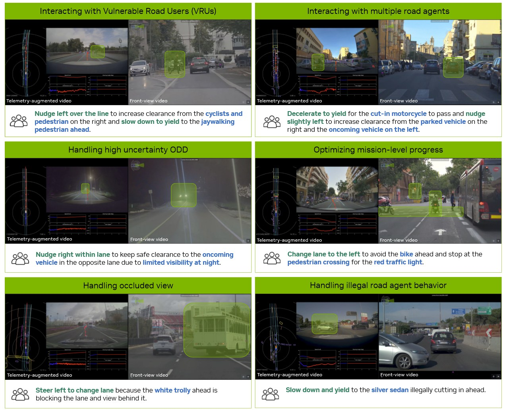
図4：ラベル付けされた CoC 推論トレースの例。運転上の意思決定と重要な構成要素が CoC に整理され、それぞれ対応する色で強調されている。
図中ラベル：Telemetry-augmented video＝テレメトリ付加動画、Front-view video＝前方視動画。（上段左）Interacting with Vulnerable Road Users (VRUs)＝交通弱者（VRU）との相互作用：「右側の自転車と歩行者からの余裕を広げるため境界線を越えて左へナッジし、前方の乱横断する歩行者に減速して譲る。」（上段右）Interacting with multiple road agents＝複数の道路エージェントとの相互作用：「割り込んでくるオートバイを通すため減速して譲り、右側の駐車車両と左側の対向車からの余裕を広げるためわずかに左へナッジする。」（中段左）Handling high uncertainty ODD＝不確実性の高い ODD への対応：「夜間の視界不良のため、反対車線の対向車との安全な余裕を保つよう車線内で右へナッジする。」（中段右）Optimizing mission-level progress＝ミッションレベルの進行の最適化：「前方の自転車を避けるため左へ車線変更し、赤信号のため横断歩道で停止する。」（下段左）Handling occluded view＝遮蔽された視界への対応：「前方の白いトロリーが車線とその背後の視界を塞いでいるため、左に操舵して車線変更する。」（下段右）Handling illegal road agent behavior＝道路エージェントの違法な挙動への対応：「前方に違法に割り込んでくる銀色のセダンに対して減速して譲る。」
自動ラベリングのためのキーフレーム選択。学習データを効率的に拡大しモデルの汎化を高めるため、CoC アノテーションのための自動ラベリングパイプラインを開発する。自動ラベリングのためのキーフレームを特定するため、まず低レベルのメタ行動の集合を定義し、対応するルールベースの検出器を実装してこれらのメタ行動をフレームレベルで推定する。次に、メタ行動の遷移が生じたフレームを意思決定の瞬間として扱うことで、大規模なデータ全体にわたってキーフレームを自動的かつ効率的に決定できる。
メタ行動。これらのメタ行動の完全な一覧を表5 に示す。これらの低レベルのメタ行動は原子的であり、自車の軌道における瞬間的な運動学的変化を表すため、高レベルの運転上の意思決定とは異なる。動画セグメント内の単一の高レベルの運転上の意思決定は、通常、縦方向と横方向の両方にわたるこのような原子的メタ行動の系列から成る。例えば、左への車線変更の意思決定は、steer left（左操舵）に続いて車両の方位を安定させるための短い steer right（右操舵）、そして go straight（直進）という系列から成り、しばしば gentle accelerate（緩やかな加速）と maintain speed（速度維持）を伴う。8 秒間の各データサンプルについて、最大 1 つの縦方向と 1 つの横方向の高レベルの運転上の意思決定をアノテーションし、一方で原子的メタ行動は 10Hz で自動的にラベル付けされる。
| 縦方向 | 横方向 | ||
|---|---|---|---|
| Gentle accelerate（緩やかな加速） | Strong accelerate（強い加速） | Steer left（左操舵） | Steer right（右操舵） |
| Gentle decelerate（緩やかな減速） | Strong decelerate（強い減速） | Sharp steer left（急な左操舵） | Sharp steer right（急な右操舵） |
| Maintain speed（速度維持） | Stop（停止） | Reverse left（左後退） | Reverse right（右後退） |
| Reverse（後退） | – | Go straight（直進） | – |
表5：縦方向と横方向について定義された原子的メタ行動の一覧。これらのメタ行動は、フレームレベルでの低レベル軌道の瞬間的な運動学的変化を表し、動画セグメントにわたる複数の原子的行動から構成される高レベルの運転上の意思決定とは対照的である。
ラベリング手順。次に、GPT-5（OpenAI, 2025）のような最先端の VLM を用いて、多段階の推論プロセスによるオフラインの自動ラベリングを行う。この手法は、効率とコストのバランスをとりつつ、大規模モデルの世界知識を構造化された CoC アノテーションへと蒸留する。人手によるラベリングパイプラインと同様に、VLM は、特定された運転上の意思決定、重要な構成要素、および運転上の意思決定をその因果要因に結び付ける簡潔な推論トレースから成る構造化された推論トレースを生成する。推論プロセスを支援するため、自動ラベリングパイプラインはモデルに生の動画と、自車の軌道、動的状態、メタ行動を含む補助信号の両方を与える。動画は、情報密度と自動ラベリングモデルのコンテキストウィンドウ内で許容される入力トークン予算とのバランスをとるため、2 Hz でサンプリングされる。
因果の混同を緩和するため、VLM には重要な構成要素を特定する際に 2 秒間の履歴動画を用いるようプロンプトで指示する。その後、後続の 6 秒間の将来動画が、自車の軌道とメタ行動とともに、多峰性を解消し対応する運転上の意思決定を決定するために用いられる。この過程で、モデルは特定された因果要因の重要度を順位付けし、運転上の意思決定に直接影響するものだけを最終的な推論トレースに残す。
4.3.3 評価
自由記述のテキスト、特に推論トレースの評価は AV 研究コミュニティにおいて未解決の課題であり、CoC における因果関係の評価はさらに一段の複雑さを加える。先行するデータセットは、通常、次のいずれかの手法に依存してきた。
- サンプルの小さな部分集合に対する人手による評価。ラベラが適切に指導されていれば効果的であるが、この手法は大規模な評価やラベリングパイプラインの迅速な反復に対してスケーラブルではない。
- BLEU（Papineni et al., 2002）、METEOR（Banerjee and Lavie, 2005）、CIDEr（Vedantam et al., 2015）のようなヒューリスティックに基づく指標。これらの指標は浅いテキスト類似度を捉えることにのみ焦点を当てており、根底にある因果推論を反映できないため、我々の CoC データセットの評価には不適切である。
- LLM に基づく自動評価。これは因果関係について推論する LLM の能力を活用し、大規模な評価セットに効果的にスケールする。しかし、LLM は、特に複雑な多段階の因果の連鎖を評価する際に、ハルシネーションを起こしやすい。
これらの課題のため、先行研究には推論データセットを評価する信頼性の高い方法が欠けていることが多い。
CoC の評価手順。これらの課題に対処するため、人手による検証と LLM に基づく自動評価を組み合わせたハイブリッドな評価戦略を採用する。具体的には、GPT-5（OpenAI, 2025）を LLM 評価器として用い、表3 に挙げた代表的なシナリオにわたる 2K サンプルの厳選された評価セットを構築する。LLM 評価中のハルシネーションを緩和するため、自由形式のテキストを用いて結果を直接採点することは避ける。代わりに、評価プロセスを、運転上の意思決定、因果要因の存在、因果関係の妥当性を網羅する 3 つの構造化されたサブタスクに分解する。これらの側面を True/False の質問の集合として再定式化することで、評価プロセスはより解釈しやすく、人間の判断とよりよく整合したものとなる。信頼性を検証するため、自動ラベル付けされたデータセットの同じバージョンに対して LLM に基づく自動評価と人手による評価を比較したところ、92% の一致率が観測され、我々の LLM に基づく自動評価の頑健性が確認された。この評価方法により、提案する構造化 CoC 推論トレースは、明示的な運転上の意思決定と重要な構成要素を強制しない自由形式の推論トレースと比べて、因果関係スコアを 132.8% 向上させることがわかった。
不完全な自動ラベルの有効性。重要な点として、因果関係の評価で完全な（100%）スコアを達成することは、仮にそれが可能であったとしても、自動ラベル付けされたデータが有用であるための必要条件ではない。複雑な運転場面における因果推論に本質的な曖昧さがあり、人手でラベル付けされた正解と評価指標の両方にノイズがあることを考えると、100% の一致が妥当な、あるいは明確に定義された目標であるかどうかは定かではない。むしろ、CoC の自動ラベルの主な価値は、大規模な SFT を可能にし、多様な運転場面にわたる AR1 の汎化を向上させる点にある。実際、第 6 節で示すように、自動ラベル付けされた CoC トレースで訓練されたモデルは、推論の教師信号を持たないベースラインに対してすでに大幅な改善を達成している。さらに、第 5 節で述べるように、我々の学習パイプラインには、推論能力と因果的一貫性をさらに強化する後続の RL ベースの事後学習ステップが組み込まれている。並行して、人手によるアノテーションの取り組みが拡大するにつれて、人手でラベル付けされた CoC 推論トレースを用いた SFT の追加ラウンドを導入し、因果的根拠付けと解釈可能性を段階的に向上させることを計画している。
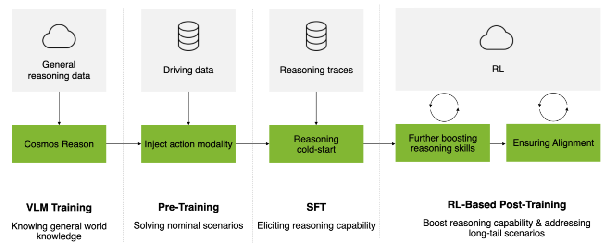
図5：Alpamayo-R1 モデルの学習パイプラインの概要。これは 3 つの主要な段階、すなわち（1）行動モダリティの注入（第 5.1 節）、（2）推論の引き出し（第 5.2 節）、（3）RL ベースの事後学習（第 5.3 節）から成る。
図中ラベル：General reasoning data＝一般的な推論データ、Driving data＝運転データ、Reasoning traces＝推論トレース、RL＝強化学習、Cosmos Reason、Inject action modality＝行動モダリティの注入、Reasoning cold-start＝推論のコールドスタート、Further boosting reasoning skills＝推論スキルのさらなる強化、Ensuring Alignment＝アライメントの確保、VLM Training: Knowing general world knowledge＝VLM の学習：一般的な世界知識を知る、Pre-Training: Solving nominal scenarios＝事前学習：通常のシナリオを解く、SFT: Eliciting reasoning capability＝SFT：推論能力を引き出す、RL-Based Post-Training: Boost reasoning capability & addressing long-tail scenarios＝RL ベースの事後学習：推論能力を高め、ロングテール場面に対処する
5 学習戦略
第 3 節で紹介した、ドメイン固有の SFT によって基礎的な物理推論能力を備えた Cosmos-Reason VLM バックボーンを基盤として、VLM を推論能力を備えた自動運転方策へと変換するための 3 段階の学習戦略を採用する。図5 に示すように、各段階は頑健で解釈可能な運転に不可欠な異なる能力を段階的に強化する。第 5.1 節では、離散的な軌道トークンで訓練し、フローマッチングに基づくアクションエキスパートを追加することで VLM に行動モダリティを注入し、モデルが車両の制御出力を予測できるようにする。第 5.2 節では、CoC データセット（第 4 節）での SFT によってモデルの推論能力を向上させ、より良い運転上の意思決定のために因果的に根拠付けられた説明を生成するようモデルに教える。最後に第 5.3 節では、大規模推論モデルのフィードバックを用いた RL を採用して、推論の質を洗練し、推論トレースを実行される行動と整合させ、軌道の質を最適化し、解釈可能で安全な運転挙動を生み出す。
5.1 行動モダリティの注入
学習時には、離散トークン（第 3.2.2 節）を通じて VLM に行動モダリティを注入し、式（1）で定義された学習トークン系列に対する交差エントロピー損失によって VLM を訓練する。式（3）の制御ベースの表現に従い、各軌道は 64 個のウェイポイントから成り、ウェイポイントごとに 2 つの量子化された値（加速度 \(a^i\) と曲率 \(\kappa^i\)）を持つため、軌道あたり 128 個の離散トークンとなる。これらは行動表現専用の特殊トークンの集合で符号化される。ただし、以下で詳述するように、推論時には離散的な軌道トークンを用いない。
二重表現の動機。学習時に離散トークンを用い、推論時に連続的なフローマッチングデコーダを用いることには、いくつかの重要な利点がある。第一に、離散トークン化により、推論と軌道が共通のトークン空間を共有する統一的な自己回帰学習が可能になり、VLM は標準的な次トークン予測を通じて因果的説明と車両の挙動を緊密に結合できる。第二に、離散表現は事後学習（第 5.3 節）において直接的な勾配の流れを可能にすることで RL 最適化を容易にし、GRPO（Shao et al., 2024）のような方策勾配法によって推論の質と推論・行動の一貫性を同時に洗練できるようにする。第三に、離散表現は車両ダイナミクスを学習するための強い教師信号を提供し、一方でフローマッチングのエキスパートは物理的に実行可能で多峰的な出力を保証する。最後に、フローマッチングによるデコードは計算効率に優れ、128 個の離散トークンを自己回帰的にサンプリングするよりも大幅に高速に連続軌道を生成し、実時間推論を可能にする。
\(\pi_{0.5}\)-KI（Driess et al., 2025）と同様に、フローマッチング（Janner et al., 2022；Lipman et al., 2023；Zhong et al., 2023；Jiang et al., 2023）によって行動をデコードする独立したアクションエキスパートを採用する。アクションエキスパートは VLM と同じ Transformer アーキテクチャに従い、同じ数の注意ヘッドと注意の次元を用いるが、効率のために隠れ埋め込みサイズと MLP の次元はより小さい。拡散スケジュールにおける各拡散タイムステップ \(t\) で、アクションエキスパートは、VLM 内の系列 \([\boldsymbol{o}_{\text{image}}, \boldsymbol{o}_{\text{egomotion}}, \textsc{Reason}]\) からの KV キャッシュと、ノイズを含む制御 \(\boldsymbol{a}_t\) の埋め込み表現（拡散時刻 \(t\) も埋め込まれて特徴に加算される）の両方を入力として受け取る。次にエキスパートは、最終層の特徴を MLP ヘッドで射影することでベクトル場 \(\mathbf{v}_\Theta(\boldsymbol{a}_t, \boldsymbol{o}, \textsc{Reason})\) を予測する。ここで \(\Theta\) は学習可能なパラメータを表す。アクションエキスパートは標準的な条件付きフローマッチング損失（Lipman et al., 2023）を用いて訓練する。
\[ L_{\text{cfm}}(\Theta) = \mathbb{E}_{t \in p_{\text{schedule}}, (\boldsymbol{o}, \textsc{Reason}) \in \mathcal{D}_{\text{data}}} \left\| \mathbf{v}_\Theta(\boldsymbol{a}_t, \boldsymbol{o}, \textsc{Reason}) - \mathbf{u}(\boldsymbol{a}_t | \boldsymbol{a}) \right\|. \tag{6} \]
実際には、ガウス条件付き最適輸送（OT）経路を採用し、\(\boldsymbol{\epsilon} \sim \mathcal{N}(\mathbf{0}, \boldsymbol{I})\) として \(\boldsymbol{a}_t = t\boldsymbol{a} + (1-t)\boldsymbol{\epsilon}\) をサンプリングする。このとき目標ベクトル場は閉形式の表現を持つ。
\[ \mathbf{u}(\boldsymbol{a}_t | \boldsymbol{a}) = \boldsymbol{a} - \boldsymbol{\epsilon}. \tag{7} \]
推論時には、\(\boldsymbol{a}_0 \in \mathcal{N}(\mathbf{0}, \boldsymbol{I})\) から開始し、オイラー積分によってノイズ除去を行う。
\[ \boldsymbol{a}_{t+\delta_t} = \boldsymbol{a}_t + \delta_t\, \mathbf{v}_\Theta(\boldsymbol{a}_t, \boldsymbol{o}, \textsc{Reason}). \tag{8} \]
デフォルトでは、Physical Intelligence et al.（2025）の提案に従い、推論時には \(\delta_t = 0.1\) を用い、学習時には \(p_{\text{schedule}}\) をシフトされたベータ分布に設定する。学習時には、エキスパートからの勾配が VLM の重みへ逆伝播するのを防ぐため、VLM が生成した KV キャッシュに勾配停止（stop-gradient）を適用する。
5.2 推論の引き出し
第 5.1 節で行動生成能力を備えた VLA を確立したので、次の課題は、特定の運転上の意思決定がなぜなされるのかを説明する、構造化され因果的に根拠付けられた推論をモデルが行えるようにすることである。この能力は、模倣学習による純粋なパターンマッチングが失敗しうる複雑で安全上重要な場面を扱ううえで極めて重要である（Wei et al., 2022）。これを達成するため、第 4 節で導入した構造化 CoC データセットを活用する。これはエキスパートの軌道と対になった、意思決定に根ざし因果的に結び付いた推論トレースを提供する。CoC データセットで SFT を行い、模倣によって推論トレースを生成するようモデルに教える。ここで各推論トレースは明示的な運転上の意思決定（表1）に結び付けられ、場面の重要な構成要素（表2）に根拠付けられている。SFT によってモデルは基本的な推論能力の足場を築けるが、第 5.3 節の RL によって推論の質をさらに洗練し、推論と行動の一貫性を強制する。形式的には、各学習サンプルは、マルチカメラの運転場面の観測 \(\boldsymbol{o} = [\boldsymbol{o}_{\text{image}}, \boldsymbol{o}_{\text{egomotion}}]\)、自車の意思決定の背後にある因果要因を説明する構造化 CoC 推論トレース \(\textsc{Reason}\)、および式（3）で定義された対応する正解の制御ベースの軌道表現 \(\boldsymbol{a}\) から成る。式（1）の系列定式化に従い、SFT の目的関数は推論・行動系列の条件付き対数尤度を最大化する。
\[ \mathcal{L}_{\text{SFT}}(\theta) = -\mathbb{E}_{(\boldsymbol{o}, \textsc{Reason}, \boldsymbol{a}) \sim \mathcal{D}_{\text{CoC}}} \left[ \log \pi_\theta(\textsc{Reason}, \boldsymbol{a} \mid \boldsymbol{o}) \right], \tag{9} \]
ここで \(\pi_\theta\) は \(\theta\) でパラメータ化された VLA 方策を表し、視覚エンコーダ、言語バックボーン、および対応する埋め込みアダプタを包含する。実際には、推論トークンと離散的な軌道トークン（第 5.1 節で述べたように軌道あたり 128 トークン）の両方に対して交差エントロピー損失を適用し、モデルが統一的な自己回帰フレームワークの中で言語ベースの推論と行動予測の同時分布を学習できるようにする。
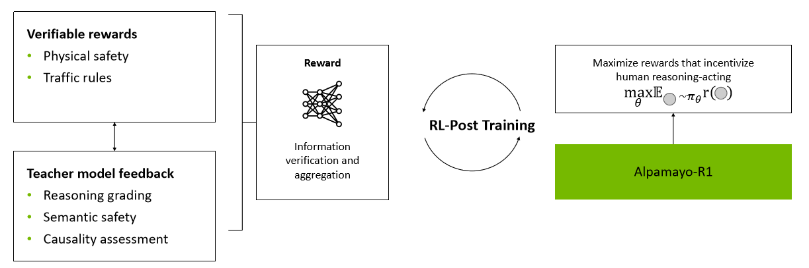
図6：我々の RL ベースの事後学習フレームワークの概要。モデルが生成する推論トレースを予測される行動と整合させるため、3 つの報酬成分、すなわち推論の質（大規模推論モデルのフィードバックによる）、推論と行動の一貫性、および軌道の質を最適化する。
図中ラベル：Verifiable rewards＝検証可能な報酬、Physical safety＝物理的安全性、Traffic rules＝交通規則、Teacher model feedback＝教師モデルのフィードバック、Reasoning grading＝推論の採点、Semantic safety＝意味的安全性、Causality assessment＝因果性の評価、Reward＝報酬、Information verification and aggregation＝情報の検証と集約、RL-Post Training＝RL 事後学習、Maximize rewards that incentivize human reasoning-acting＝人間らしい推論と行動を促す報酬を最大化する
SFT だけでは不十分な理由。この模倣学習の段階により、モデルは人間のような推論パターンを内在化できる。すなわち、どの行動をとるべきかだけでなく、特定の視覚的・文脈的手がかりのもとでなぜそのような行動が適切なのかも学習する。図8 に示すように、CoC データでの SFT は、明示的な推論の教師信号なしに訓練されたモデルと比べて、すでに軌道予測精度に測定可能な改善をもたらす。しかし、SFT によって VLA モデルは推論トレースの足場を築けるものの、いくつかの要因によって本質的な限界が残る。
- データの偏りとアノテーションのノイズ：自動ラベル付けされたデータは不完全な因果関係を含みうる（第 4.3.1 節）ため、モデルが頑健な因果推論を学習する代わりにアノテーションのアーティファクトに過適合してしまう。
- 限られた汎化：モデルはより深い因果的理解を養わずに一般的な推論パターンを記憶してしまい、新しい場面に汎化できないことがある。
- 弱い視覚的根拠付け：次トークン予測は視覚的一貫性を強制しない。モデルは場面に存在しない因果要因をハルシネーションで生み出すことがある（図10）。
- 推論と行動の不一致：同時最適化は、述べられた推論と予測された軌道との整合性を明示的に強制しないため、矛盾した説明につながる可能性がある（図11）。
次節（第 5.3 節）では、大規模推論モデルのフィードバックと明示的な推論・行動一貫性報酬を用いた RL ベースの事後学習によって、これらの限界を緩和する我々の手法を示す。
5.3 RL ベースの事後学習
第 5.2 節で概説した SFT の限界に対処するため、図6 に示す RL ベースの事後学習フレームワークを導入する。これは 3 つの相補的な報酬信号、すなわち推論の質（大規模推論モデルのフィードバックによる）、推論と行動の一貫性、および軌道の質を最適化する。テスト時の推論誤差に対するフィードバックなしに教師強制（teacher forcing）のもとでエキスパートの実演の尤度を最適化する SFT とは異なり、RL はモデル自身のロールアウトに対して明示的な推論フィードバックを与え、最適化の目的をシステムが実際に展開される方法と整合させる。この手法は、推論の因果的正しさと実行される行動との整合性の両方を評価する的を絞ったフィードバックを与えることで SFT の欠点に直接取り組み、同じ計算予算で頑健性と汎化においてそれ以上に大きな向上をもたらす。
5.3.1 事後学習アルゴリズム
大規模基盤モデルの事後学習は、大規模基盤モデルの推論能力と生成品質を高める中心的な戦略として台頭してきた（Christiano et al., 2017；DeepSeek-AI, 2025）。近年、これらの手法は身体性 AI の分野に拡張され、自動運転（Tian and Goel, 2025）や汎用ロボットエージェント（Tian et al., 2024；Zhang et al., 2025）を含む多様な身体性にわたって、VLA モデルが人間の意図をよりよく反映した行動を生成するよう促している。我々の推論 VLA の文脈では、アライメント段階は運動生成の改善を超えて広がる。すなわち、身体性を伴う設定に根拠付けられた推論の質を明示的に高め、推論と行動の一貫性を強制する。これらはいずれも、解釈可能で信頼できる自律性を達成するための重要な特性である。
我々はアライメントアルゴリズムとして GRPO（Shao et al., 2024）を採用する。GRPO は、絶対的な報酬信号に依存するのではなく、サンプリングされたモデルのロールアウトのグループ内での相対的なアドバンテージを最適化することで、標準的な方策勾配法を拡張する。具体的には、現在のモデル \(\pi_\theta\) からサンプリングされたモデルのロールアウトのグループ \(\{\tau_i\}_{i=1}^K\) が、それぞれ対応するスカラー報酬 \(r_i\) とともに与えられたとき、GRPO の目的関数は次のように定義される。
\[ \mathcal{L}_{\text{GRPO}}(\theta) = -\mathbb{E}\tau_i \sim \pi_\theta \left[ \frac{\exp(\beta A_i)}{\sum_j \exp(\beta A_j)} \left( \log \pi_\theta(\tau_i) - \lambda_{\text{KL}} \text{KL}[\pi_\theta(\tau_i) \| \pi_{\text{ref}}(\tau_i)] \right) \right], \quad A_i = r_i - \bar{r}. \tag{10} \]
ここで \(A_i\) はグループ内での各軌道の相対的なアドバンテージ、\(\bar{r}\) はグループ平均の報酬、\(\beta\) は重み付け分布の鋭さを制御する。係数 \(\lambda_{\text{KL}}\) を持つ KL 正則化項は、参照方策 \(\pi_{\text{ref}}\)（通常は SFT モデル）からの逸脱にペナルティを課し、ノイズを含む、あるいは偏った報酬信号に対する過剰最適化を防ぐとともに、事前学習中に学習された言語的および挙動的な事前知識を保持する。
5.3.2 報酬モデル
我々の報酬モデルは、モデルが何を推論し、どのように行動するかの両方を合わせて評価する 3 つの相補的な信号を統合する。具体的には、各ロールアウトの総報酬 \(r\) は 3 つの成分、すなわち推論の質の報酬、推論と行動の一貫性、および低レベルの軌道の質から構成される。
大規模推論モデルによる推論の採点。推論トレースがハルシネーションを示し、もっともらしいが安全でない、あるいは因果的に一貫しない計画を生み出しうるという問題を緩和するため、大規模推論モデル（LRM）を自動評価器として用い、推論の質に関するスケーラブルで高品質なフィードバックを提供する。エキスパートモデルが審査員としてスケーラブルなフィードバックを提供する LLM アライメントの近年の進歩（Bai et al., 2022；Lee et al., 2023）に着想を得て、最先端の LRM（例えば DeepSeek-R1（DeepSeek-AI, 2025）、Cosmos-Reason（NVIDIA et al., 2025））を推論クリティックとして活用し、VLA が生成した推論トレースの質を評価する。LRM をクリティックとして選ぶのは、このようなモデルは身体性に関する事前知識が限られているために運転固有の推論を生成するのには苦戦するかもしれないが、強い検証・評価能力を示すからである。言い換えれば、このドメインにおける生成が不完全であっても、論理的な健全性、因果的な整合性、文脈的な一貫性を評価する能力は高い信頼性を保つ（生成と検証のギャップ（generation–verification gap）としても知られる（Song et al., 2025））。得られる報酬信号は推論の質の連続的な尺度を提供し、RL によって、根拠のある論理的に一貫した推論を生成するモデルの能力を反復的に洗練することを可能にする。
推論クリティックの設計。各学習サンプルについて、LRM クリティックは、2 秒間の履歴ウィンドウの最終フレームにおけるマルチカメラ視覚観測 \(\boldsymbol{o}_{\text{image}}\)、データセットからの正解 CoC 推論トレース \(\textsc{Reason}_{\text{GT}}\)、および現在の方策 \(\pi_\theta\) が生成したモデル生成推論トレース \(\textsc{Reason}_{\text{pred}}\) を入力として受け取る。クリティックは、\(\textsc{Reason}_{\text{pred}}\) が \(\textsc{Reason}_{\text{GT}}\) とどの程度整合しているかを 2 つの次元に沿って評価する。すなわち、予測された推論が正解と一致する運転上の意思決定を記述しているかどうかという挙動の一貫性と、CoC の原則（第 4.1 節）に従って場面の履歴で観測可能な因果要因を正しく特定しているかどうかという因果推論の質である。クリティックは、挙動の一貫性と因果推論の一貫性に焦点を当てた構造化されたルーブリックに従って、予測された推論を採点する。
プロンプト：LLM による推論採点ルーブリック
あなたは自動運転の推論トレースを評価する専門家です。推論トレースは、自車が何をすべきか、およびその挙動につながる理由と要因を記述しています。あなたのタスクは、予測された推論トレース（
PRED）が、挙動の一貫性と因果推論の観点で正解（GT）とどの程度整合しているかを採点することです。
採点ルーブリック（0〜5）：
- 5 挙動と因果推論が完全に一致している。
- 4 挙動は正しく、因果推論はおおむね一致している。
- 3 挙動はおおよそ正しいが、推論が不完全またはわずかに誤っている。
- 2 挙動が部分的に誤っている、または推論が大きく一致していない。
- 1 挙動が誤っている、または GT と矛盾している。
- 0 まったく無関係、または正反対である。
得られたスカラースコア \(r_{\text{reason}}\) を推論報酬として用いる。この信号は、正しい運転挙動を記述するだけでなく、因果的な忠実性を保ち、視覚的文脈と交通上の手がかりに基づいてなぜその行動がとられるのかを正確に説明する推論トレースを生成するようモデルを促す。
CoC と行動の一貫性。モデルの行動生成がその推論に忠実に従うことを保証するため、生成された推論トレースと対応する予測された自車軌道との間の挙動的な整合性を測定する、CoC・行動一貫性報酬を導入する。具体的には、各推論・行動ロールアウトについて、予測された運動軌道を第 4.3.1 節で述べたメタ行動（解釈可能な運動プリミティブ）の系列に変換する。これらのメタ行動は、縦方向（加速／制動）と横方向（操舵）の両方に沿った自車の制御挙動を符号化する。次に、生成された推論トレースを解析して自車の意図された挙動を推定し、ルールベースのマッチングを用いて予測された軌道から導出されたメタ行動と比較する。推論トレースに記述された挙動とメタ行動が両方の軸で一致する場合は \(r_{\text{consistency}} = 1\) を、そうでない場合は \(r_{\text{consistency}} = 0\) を与える。推論を有効な運転上の意思決定へと解析できない場合（すなわち、自動ラベリングに用いた閉じた意思決定集合の中で意図が認識されない場合）には、保守的に \(r_{\text{consistency}} = 0\) を与える。単純なルールベースのロジックに基づいているものの、この二値報酬はモデルの推論と行動の結合の信頼性を向上させるうえで決定的な役割を果たす。不一致に明示的にペナルティを課し、正しい一致のみに報酬を与えることで、もっともらしく聞こえるだけでなく、首尾一貫した物理的に一貫した挙動へと変換される推論を生成するようモデルを促す。
低レベルの軌道の質。生成された運動軌道が物理的に実行可能で、快適で、安全に実行できることを保証するため、連続空間でのモデルの運動出力を評価する低レベルの軌道品質報酬を含める。この成分は、軌道の物理的特性を直接正則化することで、上記の推論レベルおよび一貫性レベルの報酬を補完する。報酬は 3 つの項を組み合わせる。
\[ r_{\text{traj}} = \lambda_{\text{L2}} \| x_{\text{pred}} - x_{\text{expert}} \|_2^2 + \lambda_{\text{coll}} \mathbb{I}[\text{collision}(x_{\text{pred}})] + \lambda_{\text{jerk}} J(x_{\text{pred}}), \tag{11} \]
ここで \(x_{\text{pred}}\) と \(x_{\text{expert}}\) はそれぞれ予測された軌道とエキスパートの軌道を表し、\(\mathbb{I}[\text{collision}(x_{\text{pred}})]\) は予測された運動が周囲の障害物との衝突につながるかどうかを示す二値の指示関数、\(J(x_{\text{pred}})\) は急激な、あるいは不快な運動にペナルティを課すためにジャークの大きさを測る。L2 模倣項はエキスパートの実演への近さを促し、安定した学習と滑らかな運転プロファイルを促進する。衝突ペナルティは安全性を保証し、ジャーク正則化は快適性と制御の滑らかさを向上させる。これらの項は合わせて、モデルの学習を人間らしく安全で快適な運動に結び付け、アライメント過程で生成される軌道の物理的妥当性を強化する。
5.3.3 コスト効率の高い学習のための事後学習データのキュレーション
RL ベースの事後学習は、その反復的な性質のために計算コストが高い。各方策更新には、推論と軌道のサンプルの大規模なバッチにわたる複数のモデルロールアウト、報酬評価、勾配ステップが必要となる。さらに、ラベル付きデータから損失を直接計算する SFT 段階とは異なり、我々の事後学習手順はオンポリシーのサンプリングと LRM に基づく報酬関数の呼び出しを伴い、計算コストとデータコストの両方を増幅させる。その結果、事前学習データ全体へ RL をスケールさせることは、学習時間と計算資源の両面で法外なものとなる。これに対処するため、RL 事後学習のために情報利得の高いデータセットをキュレーションする。重要なアイデアは、モデルの暗黙的な報酬信号（そのロジットに符号化されている）が明示的な報酬モデルと一致しないサンプルを優先することである。
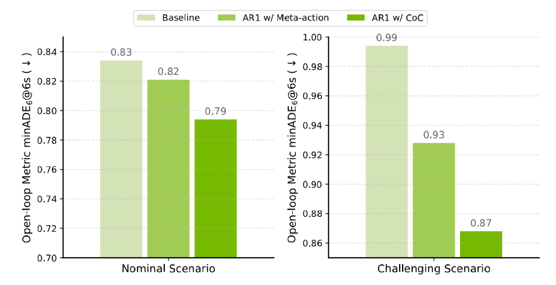
図7：軌道のみを出力するモデル、あるいはメタアクションと軌道のみを出力するモデルと比べて、Alpamayo-R1 は通常シナリオと困難シナリオの両方で改善を達成する。
図中ラベル：Baseline＝ベースライン、AR1 w/ Meta-action＝メタアクション付き AR1、AR1 w/ CoC＝CoC 付き AR1、Open-loop Metric minADE6@6s (↓)＝オープンループ指標 minADE6@6s（↓：低いほど良い）、Nominal Scenario＝通常シナリオ、Challenging Scenario＝困難シナリオ
具体的には、モデルからの各サンプルロールアウト（\( \tau_i \) と表記）について、ロジットから導かれるモデルの予測確率分布と、報酬が含意する対応する確率分布とを計算する。後者は報酬をボルツマン分布 \( p_{\text{reward}}(\tau_i) = \frac{\exp(\beta\, r_i)}{\sum_j \exp(\beta\, r_j)} \) に変換することで得る。これら 2 つの分布の間の大きな乖離は、モデルの内部的な選好（その暗黙的報酬）が外部で定義された報酬信号と矛盾していることを示す。このような不一致は、モデルが学習した報酬が不正確なサンプルを明らかにするものであり、そうしたサンプルはアラインメントにとって特に価値が高い。そこで我々は、これらの不一致の大きいサンプルを優先して重点的な事後学習データセットを構築しつつ、分布の多様性を保ち学習を安定させるために、ランダムにサンプリングしたデータを同程度の割合で混合する。このハイブリッドな集合に RL の更新を集中させることで、一様にサンプリングしたデータと比べて、高いアラインメント効率と頑健な学習ダイナミクスの両方を実現する。
5.3.4. 事後学習の基盤
RL 実験を行うために、我々は AV 推論タスク向けに特別に設計した Cosmos-RL フレームワーク（NVIDIA, 2025）のカスタマイズ版を開発した。このシステムは、大規模マルチモーダル RL のためのスケーラブルでモジュール化された基盤を提供し、Alpamayo-R1 システムの他の部分とそのまま統合できる。複数の GPU ノードにまたがる分散データローディング、混合並列学習、vLLM ベースのロールアウト生成（Kwon et al., 2023）、および報酬計算をサポートし、効率的で高スループットな方策最適化を可能にする。
6 実験
我々は、推論能力、軌道予測精度、閉ループ走行性能を評価するために、Alpamayo-R1 を多面的に包括的に評価する。まず図7 で、提案する Alpamayo-R1 が軌道のみのベースラインを大幅に上回ること、特に、より良い運転判断を下すために直観的に複雑な推論を必要とする困難シナリオにおいてそうであることを示す。
以下の節では、まず 6.1 節で評価プロトコルを示す。次に 6.2 節で、推論能力を備えた我々のモデルがどのように運転方策の改善に寄与するかを示す。6.3 節では、RL によって達成された行動アラインメントの改善をさらに示す。6.5 節から 6.7 節では、バックボーンモデル、軌道エキスパートモデル、ビジョンエンコーダに関する包括的なアブレーション研究を行い、提案手法の有効性についてより深い洞察を得る。最後に、実世界における我々のモデルの性能を示す実車デモンストレーションを提示する。
| ID | モデル名 | ルート | パラメータ数 | minADE6@3s↓ | minADE6@6.4s↓ |
|---|---|---|---|---|---|
| 1 | Base model (action modality) | × | 0.5B | 0.284 | 0.996 |
| 2 | + Ft. w/ Traj. | × | 0.5B | 0.282 | 0.971 |
| 3 | + Ft. w/ Meta-action & Traj. | × | 0.5B | 0.291 | 0.988 |
| 4 | + Ft. w/ CoC & Traj. (AR1) | × | 0.5B | 0.279 | 0.955 |
| 5 | Base model (action modality) | × | 3B | 0.291 | 0.977 |
| 6 | + Ft. w/ Traj. | × | 3B | 0.293 | 0.976 |
| 7 | + Ft. w/ Meta-action & Traj. | × | 3B | 0.280 | 0.927 |
| 8 | + Ft. w/ CoC & Traj. (AR1) | × | 3B | 0.275 | 0.908 |
| 9 | Base model (action modality) | ✓ | 0.5B | 0.264 | 0.848 |
| 10 | + Ft. w/ Traj. | ✓ | 0.5B | 0.262 | 0.834 |
| 11 | + Ft. w/ Meta-action & Traj. | ✓ | 0.5B | 0.264 | 0.821 |
| 12 | + Ft. w/ CoC & Traj. (AR1) | ✓ | 0.5B | 0.254 | 0.794 |
表6：CoC データセットにおけるモデルのオープンループ評価。ベースモデルは \( \mathcal{D}_{\text{overall}} \) で事前学習され、他のすべてのモデルは CoC データセットでファインチューニングされた後、ホールドアウトされた CoC テストデータで評価される。緑背景の数値は各設定における最良値である（本訳では太字で示す）。
表中の略記：Base model (action modality)＝ベースモデル（行動モダリティ）、Ft. w/ Traj.＝軌道でファインチューニング、Ft. w/ Meta-action & Traj.＝メタアクションと軌道でファインチューニング、Ft. w/ CoC & Traj.＝CoC と軌道でファインチューニング
| ID | モデル名 | ルート | パラメータ数 | minADE6@3s↓ | minADE6@6.4s↓ |
|---|---|---|---|---|---|
| 1 | Ft. w/ Traj. | ✓ | 0.5B | 0.315 | 0.994 |
| 2 | Ft. w/ Meta-action & Traj. | ✓ | 0.5B | 0.301 | 0.928 |
| 3 | Ft. w/ CoC & Traj. (AR1) | ✓ | 0.5B | 0.290 | 0.868 |
表7：困難データセットにおけるモデルのオープンループ評価。すべてのモデルは CoC データセットでファインチューニングされ、困難データセットで評価される。
6.1 評価プロトコル
我々の評価戦略は、相補的な 4 つの要素からなる。
- 計画精度を測定するための、通常の走行シナリオとロングテールの走行シナリオの両方におけるオープンループ軌道予測。
- 現実的なシナリオでモデルが車両を制御するときの安全性と頑健性を評価するための、AlpaSim（NVIDIA et al., 2025）を用いた閉ループシミュレーション。
- 視覚言語モデルのスケーリング、視覚エンコーディング戦略、推論の統合、行動デコーディング戦略など、主要なアーキテクチャ上の選択の影響を調べるアブレーション研究。
- 自動運転シナリオにおけるモデルの実世界展開を検証するための実車路上試験。
データセット。我々は、米国と EU の多様な地理的地域で収集した社内の走行データでモデルを学習・評価する。情報の漏洩を防ぐため、すべての評価データは厳密にジオフェンスで区切られ、学習地域から除外されている。我々の評価は、データセット \( \mathcal{D}_{\text{overall}} \) に含まれる通常の走行シナリオと、\( \mathcal{D}_{\text{hard}} \) に含まれる困難なロングテール事例の両方を網羅し、稀で安全上重要な事象に対処するモデルの能力を徹底的に検証する。詳細には、学習・評価データセット全体は、25 か国の 2,500 以上の都市で運用された複数の自車両から収集した 80,000 時間の走行データからなる。高速道路や市街地の環境を含む多様な走行シナリオを、さまざまな天候条件、時間帯、交通密度のもとで網羅している。生のセンサ入力は、周囲を撮影する 7 台のカメラ構成によるビデオ録画からなり、正確なカメラ較正パラメータと自車運動データが付随する。本研究では、入力として前方向きの 2 台のカメラ、すなわち視野角 120° の前方広角カメラと視野角 30° の前方望遠カメラを用いることに焦点を当て、近距離と遠距離の両方のシーン理解に相補的な視点を提供する。
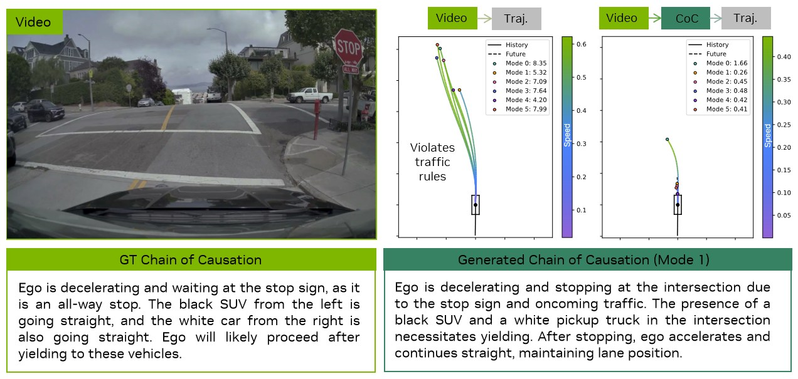
図8：推論を引き出すことによる方策の改善。Alpamayo-R1 は全方向一時停止の標識がある交差点で正しい推論トレースを生成し、自車より先に交差点に進入した他車両に道を譲る。
図中ラベル：Video＝ビデオ、Traj.＝軌道、History＝履歴、Future＝未来、Mode＝モード、Speed＝速度、Violates traffic rules＝交通規則に違反、GT Chain of Causation＝正解の因果連鎖（Chain of Causation）、Generated Chain of Causation (Mode 1)＝生成された因果連鎖（モード 1）。正解の因果連鎖の文：「全方向一時停止であるため、自車は減速し一時停止標識で待機している。左からの黒い SUV は直進しており、右からの白い車も直進している。自車はこれらの車両に道を譲った後に進行する可能性が高い。」生成された因果連鎖の文：「一時停止標識と対向車のため、自車は減速して交差点で停止している。交差点内に黒い SUV と白いピックアップトラックが存在するため、道を譲る必要がある。停止後、自車は加速して車線位置を維持しながら直進を続ける。」
一般的な走行データセット \( \mathcal{D}_{\text{overall}} \) に加えて、我々は構造化された CoC を伴う 700K のビデオセグメントからなる CoC データセット（4 節）を構築する。このデータセットは、推論能力を引き出すためのモデルのファインチューニング（6.2 節）と、RL ベースの事後学習アラインメント（6.3 節）に用いられる。
オープンループ評価。オープンループ軌道予測については、自車両の計画ウェイポイントに対応する 6.4 秒の予測ホライズンでモデルを評価する。評価指標として minADE と ADE を用いる。minADE は 6 サンプルにわたって計算され（minADE6）、正解の未来軌道と、モデルが生成した 6 つの予測のうち最もよく一致する軌道との間の最小距離として定義される。ADE（Average Displacement Error、平均変位誤差）は、すべての未来タイムステップにわたる予測軌道と正解軌道の間の平均距離である。
閉ループ評価。オープンループで良い結果が得られても、それが必ずしも信頼できる閉ループ走行性能につながるわけではないことはよく知られている（Dauner et al., 2023）。このギャップに対処するため、我々はさらに、最先端のニューラル再構成技術（Wu et al., 2025）に基づくオープンソースの閉ループ・エンドツーエンドシミュレータである AlpaSim（NVIDIA et al., 2025）の中でモデルを評価する。AlpaSim は、記録された実世界の走行ログから得た時間方向の 3D Gaussian Splatting 表現を活用し、閉ループ評価中に自車両が記録された軌道から逸脱した際には、それを用いて新しい視点を合成する。評価中、予測軌道はモデル予測制御器（MPC）によって追従され、車両の運動は動的に拡張された自転車モデルに従う。車両や歩行者を含む交通エージェントは、記録された軌道に従って動く。
我々は、自車–エージェント間およびエージェント–エージェント間の相互作用が密であることから選ばれた、20 秒間の困難シナリオ 75 個でモデルを評価する。限られた集合に見えるかもしれないが、これらのシナリオは、複雑な推論と対話的な意思決定を必要とする、最も要求の厳しい安全上重要な状況を代表するように特別に精選されている。我々は以下の AlpaSim 指標を報告する。
- 接近遭遇率（全体）：自車両が他のいずれかの交通エージェントと接近遭遇を経験したシナリオの割合。
- 接近遭遇率（過失あり）：接近遭遇率と同様だが、自車両に責任があるとみなされる接近遭遇のみ、すなわち追突される形の接近遭遇を除いたものを考慮する。
- オフロード率：自車両が走行可能領域の外を走行したシナリオの割合。
- AlpaSim スコア（全体）：事象間に走行した平均距離（km）。ここで事象とはオフロードまたは接近遭遇の発生を指す。
- AlpaSim スコア（過失あり）：AlpaSim スコアと同様だが、自車両に責任があるとみなされる接近遭遇のみ、すなわち追突される形の接近遭遇を除いたものを考慮する。
（訳注：原語は close encounter rate (all)、close encounter rate (at-fault)、offroad rate、AlpaSim score (all)、AlpaSim score (at-fault)。）
シミュレーションは、最初の接近遭遇またはオフロード事象の後に終了する。レンダリングのアーティファクトの影響を軽減するため、自車が元の記録軌道から 4 m 以上逸脱した事象は、すべての指標計算から除外される。
6.2 推論による方策の改善
本研究の主要な貢献の 1 つは、提案する CoC データを用いて運転方策を改善することである。推論が運転性能に与える影響を評価するため、まず行動モダリティ注入（5.1 節）を伴って \( \mathcal{D}_{\text{overall}} \) で事前学習したベースモデルから出発し、次にそれを異なる推論モダリティ、すなわちメタアクションの記述と完全な因果連鎖の推論トレースを用いて CoC データセットでファインチューニングする。推論時には、CoC 推論で学習したモデルは軌道予測とともに明示的な推論出力を生成し、多段階の意思決定を必要とする困難シナリオにより良く対処できるようになる。我々は 3 つのファインチューニング戦略を比較する：（1）軌道予測のみ、（2）メタアクションと軌道予測、（3）因果連鎖推論と軌道予測（Alpamayo-R1）。すべてのモデルは、ホールドアウトされた CoC テストデータで、モデルにルート情報を与える場合と与えない場合の 2 つの設定で評価される。
オープンループでの改善。表6（通常シナリオ）と表7（困難シナリオ）に示すように、CoC 推論を組み込むことで、両方の設定においてオープンループ軌道予測が大幅に改善する。ルート情報なしでは、AR1 は 6.4s において minADE6 0.955m を達成し、ベースモデルに対して 4.1% の改善となり、軌道のみ（0.971m）およびメタアクション（0.988m）のベースラインの両方を上回る。ルート情報ありでは改善はより顕著であり、AR1 は 0.794m を達成し、軌道のみのベースライン（0.834m）に対して 4.8% の改善となる。3B パラメータへのスケーリングは性能をさらに改善し、AR1-3B は 0.908m（ルートなし）を達成しており、複雑な推論タスクにおけるモデル容量の増大の利点を示している。困難シナリオでは改善はさらに大きく、AR1 は 0.868m を達成し、軌道のみのベースライン（0.994m）に対して 12% の改善となる。
これらの結果は、明示的な推論能力によって、モデルがルート案内などの文脈情報をより効果的に活用し、将来の相互作用の予測を必要とする複雑な走行シナリオに対処できるようになることを示している。図8 は、CoC を備えたモデルが困難シナリオで正しい推論トレースを生成して他車両に道を譲ることに成功する一方、ベースラインモデルはこれらの相互作用を予測できない定性的な例を示している。
閉ループでの改善。表8 に示すように、AR1 は軌道のみのベースラインと比べて接近遭遇率を 35% 削減し（11% 対 17%）、オフロード率は同程度である（4% 対 3%）。全体の AlpaSim スコアは 0.38 から 0.50 に改善し、推論に基づく意思決定が動的な閉ループシナリオにおける安全性を向上させることを示している。図9 は、我々のモデルが AlpaSim 内の困難シナリオで閉ループ走行を成功裏に行えることを示す 2 つの定性的な例を示している。
6.3 RL 事後学習による推論・一貫性・安全性の改善
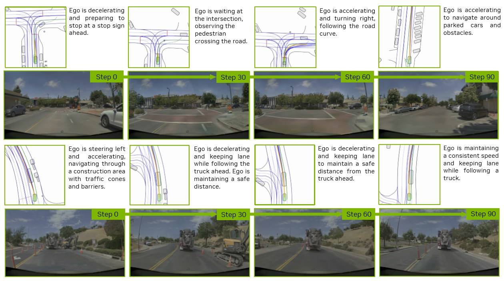
図9：AlpaSim（NVIDIA et al., 2025）における閉ループ評価の例。上段は交差点シナリオ、下段は工事シナリオを示す。
図中ラベル：Step＝ステップ。上段（交差点）の説明文：Step 0「自車は減速し、前方の一時停止標識で停止する準備をしている。」Step 30「自車は交差点で待機し、道路を横断する歩行者を観察している。」Step 60「自車は加速しながら右折し、道路のカーブに沿っている。」Step 90「自車は駐車車両と障害物を避けて進むために加速している。」下段（工事）の説明文：Step 0「自車は左に操舵して加速し、トラフィックコーンとバリアのある工事区域を通り抜けている。」Step 30「自車は前方のトラックに追従しながら減速して車線を維持している。自車は安全な距離を保っている。」Step 60「自車は前方のトラックとの安全な距離を保つために減速して車線を維持している。」Step 90「自車はトラックに追従しながら一定の速度を保ち車線を維持している。」
| モデル | 接近遭遇率 全体（%）↓ | 接近遭遇率 過失あり（%）↓ | オフロード率 （%）↓ | AlpaSim スコア 全体 ↑ | AlpaSim スコア 過失あり ↑ |
|---|---|---|---|---|---|
| Baseline | 17.0±3.0 | 6.0±1.0 | 3.0±2.0 | 0.38±0.04 | 0.86±0.11 |
| Alpamayo-R1 | 11.0±2.0 | 5.0±3.0 | 4.0±3.0 | 0.50±0.08 | 0.87±0.18 |
表8：AlpaSim（NVIDIA et al., 2025）における閉ループ評価結果。すべてのモデルは、75 個の困難シナリオにわたり、ルート情報なしで評価される。Baseline（ベースライン）は、推論なしで CoC 学習データでファインチューニングした軌道のみのモデルを指す。（訳注：原表では Alpamayo-R1 の行全体が緑背景で強調されている。本訳では太字で示した。）
CoC データでの SFT により、モデルは推論トレースと行動を同時に生成できるようになるが、これらのトレースが因果的に根拠づけられていることや、結果として得られる行動が推論を忠実に反映し、人間の運転規範に沿っていることは保証されない。このギャップに対処するため、我々は RL ベースの事後学習を適用して、推論の品質、推論と行動の一貫性、軌道の品質を同時に改善する（手法の詳細は 5.3 節を参照）。本節では、CoC データでファインチューニングした 0.5B の AR1 モデルを事後学習し、異なる報酬成分がモデルの挙動に与える影響を示す。
LRM フィードバックから学習することの価値。モデルの推論トレースが流暢であるだけでなく、因果的に根拠づけられ文脈的にも正確であることを保証するために、我々は LRM のフィードバックから導かれる推論報酬を導入する（詳細は 5.3 節）。この報酬は、生成された各推論トレースの、走行シーンに対する論理的一貫性と因果的正しさを測定する連続的な評価信号を提供する。具体的には、推論報酬を適用すると、6 つの生成のうち最尤のロールアウトの平均推論スコアは約 45%（3.1→4.5）改善する。図10 では、事後学習の前後におけるモデルの挙動の違いを示す 2 つの定性的な例を示す。左のシナリオでは、自車両が工事現場に接近している。SFT で事前学習したモデルが生成した最尤モードは、工事用バリアを見落としてシーンを通常の走行状況として記述しており、回避行動の必要性を認識できていない。しかし事後学習後は、モデルの推論は工事区域に正しく注意を向け、自車両は障害物を避けるために右へ寄るべきであると説明する。同様に、右のシナリオでは、2 人の歩行者がまさに進路から出ようとしている。SFT で事前学習したモデルが生成した最尤モードは、この文脈上の手がかりを見落とし、自車両が加速の準備をすべきであることを予測できていない。事後学習後、モデルは歩行者が走行可能領域から出つつあることを正しく認識し、自車両が動き出しても安全であると推論する。
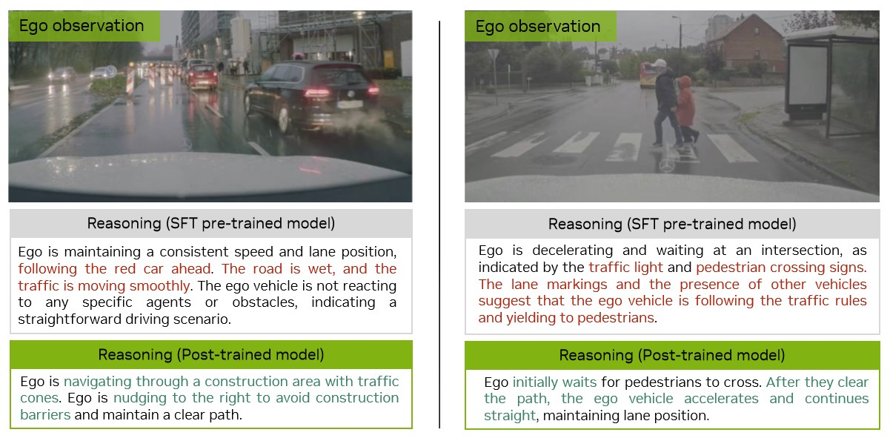
図10：推論報酬を用いた事後学習は、走行シナリオにおける因果的理解と文脈的推論を改善する。左：ベースモデルは工事用バリアを見落として回避行動を開始できないのに対し、事後学習したモデルは自車が障害物を避けるために右へ寄るべきであると正しく推論する。右：ベースモデルは歩行者が進路から出つつあることを見逃すのに対し、事後学習したモデルは自車両が加速しても安全であると正しく推論する。
図中ラベル：Ego observation＝自車の観測、Reasoning (SFT pre-trained model)＝推論（SFT 事前学習モデル）、Reasoning (Post-trained model)＝推論（事後学習モデル）。左・SFT：「自車は前方の赤い車に追従し、一定の速度と車線位置を維持している。路面は濡れており、交通は円滑に流れている。自車両は特定のエージェントや障害物に反応しておらず、単純な走行シナリオであることを示している。」左・事後学習：「自車はトラフィックコーンのある工事区域を通り抜けている。自車は工事用バリアを避けて進路を確保するために右へ寄っている。」右・SFT：「信号機と横断歩道標識が示すとおり、自車は減速して交差点で待機している。車線標示と他車両の存在は、自車両が交通規則に従い歩行者に道を譲っていることを示唆している。」右・事後学習：「自車はまず歩行者が横断するのを待つ。歩行者が進路から出た後、自車両は加速して車線位置を維持しながら直進を続ける。」（原図では誤った推論が赤、正しい推論が緑で色分けされている。）
| 学習戦略 | ADE ↓ | 推論の採点 ↑ | 推論–行動一貫性スコア ↑ | 接近遭遇率（%）↓ |
|---|---|---|---|---|
| SFT | 2.12m | 3.1 | 0.62 | 6.9 |
| SFT + RL (\( r_{\text{reason}} \)) | 2.19m | 4.5 | 0.53 | 5.8 |
| SFT + RL (\( r_{\text{reason}} + r_{\text{consistency}} \)) | 1.92m | 4.5 | 0.85 | 6.2 |
| SFT + RL (\( r_{\text{reason}} + r_{\text{consistency}} + r_{\text{safety}} \)) | 1.94m | 4.4 | 0.83 | 3.7 |
表9：RL ベースの事後学習による改善。RL ベースの事後学習がモデルの推論、一貫性、運動の品質に与える影響を評価する。RL アラインメントがモデルの生成分布にどのように影響するかを評価するため、指標は 6 つの生成ロールアウトのうち最尤のロールアウトから計算する。ADE、大規模推論クリティックによって採点された推論品質（5.3.2 節）、推論–行動一貫性、接近遭遇率を測定する。評価は 6.2 節で導入した CoC データセット全体で行う。我々は 4 つの構成、すなわち SFT で事前学習したベースモデルと、推論・一貫性・安全性の報酬の異なる組み合わせを取り入れた 3 つの RL 事後学習の変種を比較する。（訳注：原表では最終行が緑背景で強調されている。本訳では太字で示した。）
推論–行動一貫性を課すことの価値。興味深いことに、事後学習段階で推論報酬のみを最適化した場合、推論スコアは確かに向上するが、ADE 指標と推論–行動一貫性はいずれもベースモデルと比べて悪化する。これは、推論品質のみを最適化すると、根拠のない、あるいは過信した推論につながりうることを示している。すなわち、モデルは流暢ではあるが因果的に断絶した説明を生成し、それが首尾一貫した行動に結びつかない。したがって、一貫性報酬は推論を物理的に実現可能な挙動に結びつけるうえで極めて重要であり、解釈可能性の改善が制御の忠実性を犠牲にして得られるものではないことを保証する。具体的には、推論報酬と一貫性報酬の両方を同時に最適化すると、事後学習したモデルは最尤モードの ADE を 9.4% 削減し（2.12m→1.92m）、推論スコアを 45% 改善し（3.1→4.5）、推論–行動一貫性を 37% 向上させる（0.62→0.85）。これらの結果は、2 つの報酬成分が相補的であることを示している。推論報酬は解釈可能性と因果的な根拠づけを高め、一貫性報酬は生成された推論が忠実でより正確な運動挙動に結びつくことを保証する。図11 では、事後学習がモデルの運動の忠実性をどのように改善するかを示す 2 つの定性的な例を提示する。モデルが「一時停止標識で減速し、停止し、その後加速する」と推論したとき、アラインメントされたモデルはこの因果的な順序に忠実に従う行動を生成する（滑らかに減速し、完全に停止し、交差点が空いてから初めて加速する）のに対し、SFT で事前学習したモデルは途中で停止して二度と動き出さない傾向がある。
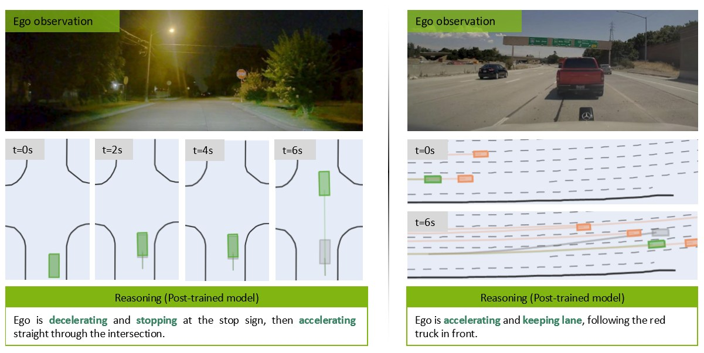
図11：推論–行動一貫性報酬を用いた事後学習は運動の忠実性を改善する。灰色の運動は SFT で事前学習したベースモデルの最尤ロールアウトを、緑色の運動は事後学習したモデルの最尤ロールアウトを表す。橙色の運動は障害物の運動の再生を表す。左：ベースモデル（灰色）は、その推論トレースが停止後に加速するよう自車両に正しく指示しているにもかかわらず、途中で停止して動き出すことができない。事後学習したモデル（緑色）は、減速、停止、そして交差点が空いた時点での加速という因果的な順序全体を実行する。右：推論が先行車両に追従するよう自車両に指示するとき、事後学習したモデルが生成する運動は、その推論トレース（「加速して車線を維持する」）に従って適切な速度と車線位置を維持するのに対し、ベースモデルが生成する運動は車線を変更し、意図した計画から逸れてしまう。
図中ラベル：Ego observation＝自車の観測、Reasoning (Post-trained model)＝推論（事後学習モデル）。左：「自車は一時停止標識で減速して停止し、その後加速して交差点を直進する。」右：「自車は前方の赤いトラックに追従しながら加速し、車線を維持している。」
安全性報酬を課すことの価値。推論報酬と一貫性報酬は解釈可能性と因果的な根拠づけを改善するが、安全な運動軌道を生成するようモデルを明示的に制約するものではない。物理的な安全性を確保するため、我々は事後学習中に安全でない軌道や物理的にありえない軌道にペナルティを与える安全性報酬を導入する。経験的に、安全性報酬を加えることで、推論品質を損なうことなく接近遭遇率がさらに低減し、軌道生成が安定する。表9 に示すように、完全な報酬構成は、ADE と推論–行動一貫性の改善を維持しつつ、最も低い接近遭遇率を達成する。
6.4 公開ベンチマークでの評価
再現可能な評価とコミュニティでの比較を可能にするため、我々は公開した Alpamayo-R1 モデルを PhysicalAI-AV データセット（NVIDIA, 2025）と AlpaSim の公開シナリオセット（NVIDIA et al., 2025）で評価する。Alpamayo-R1-10B は、VLM バックボーンとして Cosmos-Reason（NVIDIA et al., 2025）を、2B パラメータの拡散ベースの軌道デコーダとともに用いる。一方、Alpamayo-R1-0.5B は比較のためにより小さなバックボーンを用いる。両モデルとも、軌道予測とともに因果連鎖（Chain-of-Causation）の推論トレースを生成する。
オープンループの結果。我々は両モデルを PhysicalAI-AV データセットのホールドアウトされた 644 例で評価する。表10 に示すように、Alpamayo-R1-10B は 6.4s において minADE6 0.849m を達成し、Alpamayo-R1-0.5B（0.913m）に対して 7.0% の改善となり、VLM バックボーンをスケーリングすることの利点を示している。
閉ループの結果。さらに我々は、920 個の困難な走行シナリオからなる AlpaSim 公開シナリオセットで両モデルを評価する。表10 に示すように、Alpamayo-R1-10B はすべての閉ループ指標で大幅な改善を達成する。すなわち、オフロード率は 16% 低減し（16% 対 19%）、接近遭遇率は 55% 低減し（4% 対 9%）、AlpaSim スコアは 2 倍以上に改善する（0.72 対 0.35）。これらの結果は、モデル容量のスケーリングが、閉ループシミュレーションにおいて複雑な走行シナリオに対処するモデルの能力を大幅に高めることを示している。
| モデル | オープンループ | 閉ループ（AlpaSim） | ||
|---|---|---|---|---|
| minADE6@6.4s↓ | 接近遭遇率 ↓（%） | オフロード率 ↓（%） | AlpaSim スコア ↑ | |
| Alpamayo-R1-0.5B | 0.913 | 9.0±1.0 | 19.0±0.0 | 0.35±0.01 |
| Alpamayo-R1-10B | 0.849 | 4.0±0.0 | 16.0±1.0 | 0.72±0.02 |
表10：公開 PhysicalAI-AV データセット（NVIDIA, 2025）における Alpamayo-R1 の評価。オープンループの結果は PhysicalAI-AV 評価セットの 644 例で評価する。閉ループの結果は、AlpaSim（NVIDIA et al., 2025）を用いて PhysicalAI-AV NuRec データセット（NVIDIA, 2025）の 920 シナリオで評価する。すべてのモデルは CoC の推論トレースと軌道を予測する。閉ループ指標は過失ありのものである。（訳注：原表では Alpamayo-R1-10B の行が緑背景で強調されている。本訳では太字で示した。）
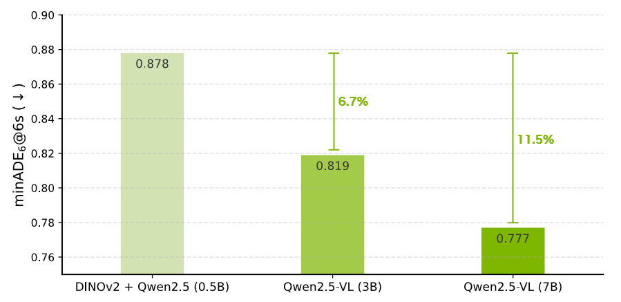
図12：VLM バックボーンのサイズがオープンループ走行性能に与える影響。すべてのモデルは、同じ学習データとハイパーパラメータで、\( \mathcal{D}_{\text{overall}} \) 上で評価される。
6.5 アブレーション：VLM バックボーンの選択
VLM バックボーンの選択は Alpamayo-R1 の性能にとって極めて重要である。本節では、2 つの相補的な側面、すなわちモデル規模の影響と、Physical AI に焦点を当てた事前学習の利点を調べる。これらのアブレーションを合わせて、モデル容量とドメインに関連した事前学習の両方が、高い運転性能に不可欠であることを示す。
6.5.1. モデルサイズのアブレーション
運転性能に対するモデル容量の影響を調べるため、まず汎用 VLM を用いたベースラインのスケーリング実験を行う。具体的には、バックボーンのサイズが 0.5B、3B、7B パラメータと異なる、我々のアーキテクチャの 3 つの変種を評価する。0.5B モデルは DINOv2（Oquab et al., 2023）ビジョンエンコーダと Qwen2.5-0.5B（Qwen Team, 2024）言語モデルを組み合わせたものであり、3B と 7B のモデルはそれぞれ Qwen2.5-VL-3B（Bai et al., 2025）と Qwen2.5-VL-7B（Bai et al., 2025）を活用する。このアブレーション研究では、すべての変種を同一のデータで、主要モデルと比べて削減した学習予算で学習し、ルート情報なしで \( \mathcal{D}_{\text{overall}} \) のホールドアウトテストセット上で、6.4s ホライズンの minADE6 指標を用いて評価する。
図12 に示すように、モデルサイズの増大に伴いオープンループ性能が一貫して改善することが観察される。7B モデルは 0.5B のベースラインと比べて minADE6 を 11% 削減しており、視覚言語バックボーンのスケーリングによってシーン理解と軌道予測が改善されることを示している。これらの結果はモデル容量の重要性を裏づけるものの、ドメイン固有の事前学習を行っていない汎用 VLM に基づいている。6.5.3 節で示すように、Physical AI に焦点を当てた事前学習を（Cosmos-Reason を介して）組み込むことでさらに大幅な改善が得られる。これが、最終的な Alpamayo-R1 モデルがバックボーンとして Cosmos-Reason を採用している理由である。
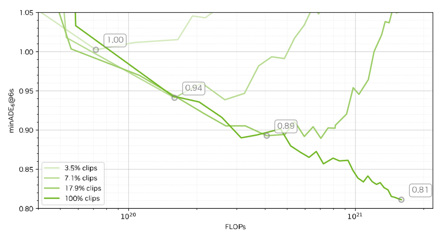
図13：学習データの規模がオープンループ走行性能に与える影響。すべてのモデルは 0.5B のアーキテクチャを用い、ハイパーパラメータは同一で、総学習ステップ数は固定である。モデルは \( \mathcal{D}_{\text{overall}} \) のホールドアウトテストセットで評価される。
図中ラベル：3.5% clips / 7.1% clips / 17.9% clips / 100% clips＝クリップ（データ）全体の 3.5% / 7.1% / 17.9% / 100% を使用、FLOPs＝演算量（FLOPs）
6.5.2. データのスケーリング
モデルのスケーリングを補完するものとして、モデルアーキテクチャと学習予算を一定に保ったときに、学習データの規模が運転性能にどのように影響するかを調べる。我々は 0.5B モデルを、100k、200k、500k、1M、2M のビデオセグメントという異なる量のデータで学習し、すべての実験で総学習ステップ数を固定する。
図13 に示すように、データ規模の増大に伴い性能は一貫して改善し、自動運転におけるデータの多様性の価値を示している。100k のモデルは明確な過学習を示す（早期終了なしで 1.111m、早期終了ありで 1.016m）。500k へのスケーリングでは 0.880m（100k に対して 13.4% の改善）を達成し、2M では 0.874m（14.0% の改善）という最良の性能を達成する。これらの結果は、前の小節のモデルサイズのアブレーションと合わせて、モデル容量とデータ規模の両方が運転性能を改善するための有効な次元であることを示しており、頑健な自動運転システムを実現するうえで両者が相補的な役割を果たすことを強調している。（訳注：本文では 5 通りのデータ量（100k〜2M）を挙げ、最良値を 0.874m としているが、図13 には 4 系列（3.5%〜100% クリップ）が示され、最良点の値は 0.81 と表示されている。両者の対応関係は原文からは明確でない。）
6.5.3. Cosmos-Reason の Physical AI 能力
上記のスケーリング実験はモデル容量の重要性を示しているが、重要な問い、すなわち「モデルサイズを固定したとき、ドメイン固有の事前学習は重要か」には答えていない。3 節で述べたように、Alpamayo-R1 は VLM バックボーンとして Cosmos-Reason（NVIDIA et al., 2025）を採用しており、これは走行シナリオを含む Physical AI データで特に事後学習されている。このアーキテクチャ上の選択を検証し、Physical AI に焦点を当てた事前学習が規模だけでは得られない運転固有の理解を高めることを示すため、我々は公開の運転ベンチマーク上で Cosmos-Reason を同程度の 7B 規模の汎用 VLM と比較評価する。
LingoQA ベンチマーク。表11 は、走行シーンの理解について視覚言語モデルを評価する LingoQA ベンチマーク（Marcu et al., 2024）でのゼロショット評価結果を示す。我々の Cosmos-Reason-7B モデルは 66.2% の正解率を達成し、GPT-4V（59.6%）、Qwen2-VL-7B（52.6%）、Qwen2.5-VL-7B（62.2%）、InternVL3.5-8B（58.6%）、DeepSeek-VL-7B（46.4%）を含むさまざまな VLM を上回る。ベースラインに対するこの改善は、Physical AI に焦点を当てた SFT が自動運転の文脈におけるシーン理解能力を大幅に改善することを示しており、図12 に示したモデルスケーリングの利点を補完するものである。
これらの結果は、モデル容量とドメイン固有の事前学習の両方が高い運転性能に不可欠であることを裏づけている。このことが、Alpamayo-R1 のバックボーンとして Cosmos-Reason を選択した動機であり、汎用 VLM がそれ以外では持ちえない Physical AI 能力を備えた強固な基盤を提供する。
| モデル | GPT-4V | Qwen2-VL-7B | Qwen2.5-VL-7B | InternVL3.5-8B | DeepSeek-VL-7B | Ours（本研究） |
|---|---|---|---|---|---|---|
| Lingo-Judge | 59.6 | 52.6 | 62.2 | 58.6 | 46.4 | 66.2 |
表11：LingoQA ベンチマーク（Marcu et al., 2024）におけるさまざまな VLM のゼロショット正解率。我々の Cosmos-Reason-7B モデルはすべてのベースラインを上回る。
| 戦略 | minADE6@6.4s ↓ | AlpaSim スコア（過失あり）↑ | 快適性（加速度）↑ | 相対デコード速度 ↑ |
|---|---|---|---|---|
| Auto-Regressive（自己回帰） | 0.6811 | 0.59 ± 0.17 | 44.05% | 1.00× |
| Flow Matching（フローマッチング） | 0.6440 | 1.27 ± 0.34 | 97.38% | 1.16× |
表12：軌道デコーディング戦略の比較。モデルはルート信号ありで学習・評価される。全体的な改善を示すため、評価は \( \mathcal{D}_{\text{overall}} \) 上で行う。快適性（加速度）指標は、予測軌道のうち快適範囲内にあるものの割合を測定する。（訳注：原表では Flow Matching の行が緑背景で強調されている。本訳では太字で示した。）
6.6 アブレーション：行動モダリティ注入
表12 において、ユニサイクル（一輪車）動力学に支配される連続的な行動表現をフローマッチングとともに採用することの有効性を示す。具体的には、6 個の離散的な軌道トークンを自己回帰的に予測するよう学習したベースラインモデルと、同一のサイズと学習データを持ちフローマッチングによって軌道をデコードするモデルとを比較する。ベースラインの自己回帰モデルにおける離散軌道トークナイザは VQGAN（Esser et al., 2021）によって事前学習されており、低い再構成誤差を維持しつつ自己回帰デコーディングのレイテンシを削減するために、出力される離散トークンの数を最小化している。推論時には、性能低下をごくわずかに抑えつつレイテンシを削減するため、フローマッチングにおいて \( \delta_t = 0.2 \)、すなわち 5 ステップに設定する。表12 に示すように、フローマッチングを通じて動力学的に支配された連続行動空間を活用することで、オープンループ指標と閉ループ指標の両方が大幅に改善し、快適性が向上し、より高速な推論速度が達成される。
6.7 アブレーション：効率的な視覚エンコーディング
3.2.1 節で論じたように、マルチカメラのビデオ入力を表現するのに必要なトークン数の点で、デフォルトの単一画像トークナイザよりも効率的になりうる視覚エンコーディングの代替手法が存在する。手法を比較するため、我々は 4 カメラ構成を選び、ビジョンエンコーダを変えて、得られるエンドツーエンドモデルのオープンループ運転品質を、ベースラインに対する minADE6 で比較する。
表13 に見られるように、Ivanovic et al.（2025）のトライプレーンベースのマルチカメラトークナイザは、パラメータを 6.3M 追加するだけでセンサトークン数を 3.6× 削減しつつ、ベースラインとほぼ同一の minADE6 値を達成する。Flex（Yang et al., 2025）はさらに劇的な改善を達成でき、運転モデル全体に 61.6M のパラメータを追加するだけで最大 20× のトークン圧縮を実現しつつ、ベースラインの運転品質に匹敵する。
最適な戦略はカメラ数、時間フレーム数、カメラ解像度によって変わりうるため、AR1 はデフォルトで単一画像トークン化を採用する。例えば、カメラ数が少なく履歴が短い場合は単一画像トークン化が有利となり、カメラ数が多く履歴が短い場合はトライプレーン（Ivanovic et al., 2025）が、カメラ数が多く履歴系列が長い場合は Flex（Yang et al., 2025）が有利となる。
6.8 実車路上試験
AR1 の実世界展開能力を検証するため、我々はモデルを試験車両に搭載し、市街地の走行環境で路上試験を実施した。車両は人間の介入なしに複雑な市街地シナリオを走行することに成功し、シミュレーションを超えて実世界の走行条件に対処するモデルの能力を示した。図14 は、AR1 が交通状況を正確に識別し、適切な運転行動につながる明確かつ簡潔な推論トレースを生成する交差点を示している。これらの試験は、シミュレーションでの改善が実世界の自動運転シナリオにうまく移転されることを裏づけている。
| ビジョンエンコーダ | 追加パラメータ数 ↓ | 画像あたりトークン数 ↓ | 相対 minADE6 ↓ |
|---|---|---|---|
| Baseline（ベースライン） | 0 | 160 (1.0×) | 0% |
| Triplane（Ivanovic et al., 2025） | 6.3M | 104 (1.5×) | −3% |
| 45 (3.6×) | +4% | ||
| Flex（Yang et al., 2025） | 61.6M | 50 (3.2×) | −3% |
| 32 (5.0×) | −3% | ||
| 16 (10×) | −2% | ||
| 8 (20×) | −2% |
表13：\( \mathcal{D}_{\text{overall}} \) における、さまざまな効率的視覚エンコーディング戦略の相対比較。
| モデル構成 | ビジョンエンコーダ | プレフィル | 推論のデコーディング | 軌道のデコーディング | 合計 |
|---|---|---|---|---|---|
| Baseline（軌道のみ、フローマッチング） | 3.43ms | 16.54ms | – | 8.75ms（5 ステップ） | 29ms |
| Alpamayo-R1（本研究、フローマッチング） | 3.43ms | 16.54ms | 70ms（40 トークン） | 8.75ms（5 ステップ） | 99ms |
| Alpamayo-R1（自己回帰軌道） | 3.43ms | 16.54ms | 70ms（40 トークン） | 222ms（127 トークン） | 312ms |
表14：NVIDIA RTX 6000 Pro Blackwell における推論実行時間の内訳。Alpamayo-R1 は、フローマッチングに基づく軌道デコーディングと効率的な視覚エンコーディングを組み合わせることで、リアルタイム性能（99ms）を達成する。（訳注：原表では Alpamayo-R1（ours, flow matching）の行が緑背景で強調されている。）
リアルタイム推論性能。実車展開における重要な要件は、リアルタイム推論能力である。我々は NVIDIA RTX 6000 Pro Blackwell プラットフォーム上で AR1 をベンチマークし、自動運転のリアルタイム要件（通常 100ms）の範囲内である 99ms のエンドツーエンド推論レイテンシを達成した。表14 は推論パイプラインの詳細な内訳を示し、我々の手法を代替の設計選択と比較している。プレフィル段階では、視覚トークンとルート情報を Transformer 層で処理してキー・バリューキャッシュを生成し、それが推論と軌道デコーディングの両方で用いられる。
7 結論
本研究では、構造化された思考の連鎖（chain-of-thought）推論能力を軌道予測と統合し、特にロングテールの安全上重要なシナリオにおける自動運転性能を高める視覚–言語–行動モデル Alpamayo-R1（AR1）を提示する。モデルが因果的に根拠づけられた推論を生成できるようにするため、大規模な自動ラベリングと人間参加型（humans in the loop）を組み合わせたハイブリッドなラベリングパイプラインによって構築した Chain of Causation（CoC、因果連鎖）データセットを導入する。さらに RL によって推論と行動をアラインメントし、生成された推論トレースが実行された運転挙動と一貫することを保証する。オープンループ指標、閉ループシミュレーション、アブレーション研究にわたる我々の包括的な評価は、AR1 がエンドツーエンドのベースラインに対して一貫した改善を達成し、特に複雑なエージェント間の相互作用を伴う困難シナリオにおいて顕著な向上を示すことを実証している。
今後の課題。いくつかの有望な研究の方向性が残されている。第一に、方策の構造化：我々のフローマッチングベースの軌道デコーダは運動学的に実現可能な出力を提供するが、高レベルのメタアクションを構造化された運動プリミティブに分解する階層的な方策アーキテクチャを探求することで、解釈可能性と効率をさらに改善できる可能性がある。第二に、オンデマンドの推論：我々の現在のアーキテクチャはすべての入力に対して推論トレースを生成する。今後の研究では、安全上重要なシナリオや曖昧なシナリオに対してのみ選択的に推論を呼び出す適応的な機構を調査し、テスト時スケーリングにおける近年の進展（Yao et al., 2023; OpenAI, 2024）と同様に、推論時の計算配分をより効率的にすることが考えられる。第三に、補助タスクの統合：AR1 は軌道予測と因果推論に焦点を当てているが、深度推定、シーンフロー予測、3D Gaussian Splatting 表現などの相補的な自己教師あり目的を組み込むことで、視覚バックボーンの意味理解を改善できる可能性がある。第四に、世界モデルの統合：我々の現在の手法は観測された状態から行動を予測する。学習された世界モデルを組み込むことで、前向きシミュレーションと反実仮想的な推論が可能になり、動的なシナリオにおける頑健性が改善される可能性がある。
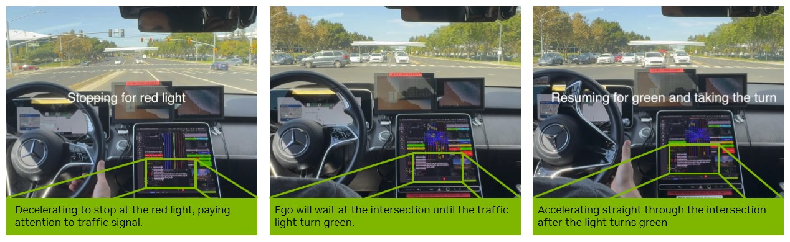
図14：AR1 が交差点シナリオで推論トレースを生成することを示す実車路上試験。自車両はまず赤信号のために減速して停止し、次に信号を待ち、最後に信号が青に変わると走行を再開して曲がる。
図中ラベル：Stopping for red light＝赤信号で停止、Resuming for green and taking the turn＝青信号で再発進して曲がる。下部の推論文（左から）：「交通信号に注意を払い、赤信号で停止するために減速している。」「自車は信号が青に変わるまで交差点で待機する。」「信号が青に変わった後、加速して交差点を直進している。」
オープンソース公開。我々は Alpamayo-R1-10B のモデル重みを https://huggingface.co/nvidia/Alpamayo-R1-10B で、推論コードを https://github.com/NVlabs/alpamayo で公開する。モデルは PhysicalAI-AV データセット（NVIDIA, 2025）と AlpaSim 公開シナリオセット（NVIDIA et al., 2025）で評価されており、研究コミュニティによる再現可能なベンチマークを可能にする。
A 貢献者と謝辞
A.1 中核的貢献者
Yulong Cao, Tong Che, Yuxiao Chen, Wenhao Ding, Boris Ivanovic, Peter Karkus, Boyi Li, Tsung-Yi Lin, Patrick Langechuan Liu, Zhijian Liu, Jason Lu, Wenjie Luo, Marco Pavone, Ran Tian, Yan Wang, Xinshuo Weng, Tianjun Xiao, Xiaodong Yang, Yurong You, Xiaohui Zeng.
データとベンチマーク：TX、XW、YC、WD、YW が自動運転のデータセットとベンチマークを整備した。
ラベリングパイプライン：XW、YC、WD、BL、XY、YW が推論トレースのラベリングパイプラインとその基盤を開発した。
学習基盤：YY、WL、YW、WD が教師ありファインチューニングの基盤を構築し、TC、RT、WL が強化学習の基盤を構築した。
視覚エンコーディング：BI、YW がビジョンエンコーダを開発した。
行動デコーディング：YY、YC がフローマッチング軌道デコーダを構築した。
モデル学習：YY、WL、YW、WD、JL、ZL、PLL が教師ありファインチューニングにより VLA モデルを学習した。YW、WL、YY、XY、TL、XZ が Cosmos-Reason VLM バックボーンを学習した。RT、TC、YW、WL、YY、WD が事後学習戦略を設計し、強化学習によりモデルを事後学習した。WD、YC がデータ混合戦略を設計した。
プロジェクトリーダー：YW、WL が構想から完成までプロジェクトを推進した。
プログラムアーキテクトおよびプロジェクトマネージャー：MP が全体の取り組みを構想・調整・指導した。BI は調整と指導において MP を支援した。
A.2 貢献者
Junjie Bai, Ke Chen, Jenna Diamond, Yifan Ding, Liang Feng, Greg Heinrich, Jack Huang, Pinyi Li, Dongran Liu, Ming-Yu Liu, Leo Yunxiang Mao, Pavlo Molchanov, Lindsey Pavao, Zhenghao Peng, Mike Ranzinger, Ed Schmerling, Shida Shen, Yunfei Shi, Sarah Tariq, Tilman Wekel, Eric Yang, Wenyuan Zhang.
貢献。ST は製品側でのエンドツーエンド開発を主導し、データパイプラインとモデルアーキテクチャについて重要な助言を提供した。LP、JD は人手によるアノテーション作業を主導した。PM、GH、MR はビジョンエンコーダを学習した。ML は Cosmos-Reason モデルの支援を提供した。YD は cosmos AV データを学習用の形式に処理した。ZP は大規模 SFT の学習ワークフローを改善した。FL、JB は大規模 RL 学習基盤の支援を提供した。ES は走行データを整備・前処理した。KC、WZ、JH は CoC 自動ラベリングパイプラインを改善した。SS は CoC 推論トレースのための LLM ベースの評価器を開発した。YS、EY、TW は人手ラベリング用の CoC ラベリングツールを構築した。DL、PL、LM は実車試験とモデルのプロファイリングの実施に大きく貢献した。
A.3 謝辞
リーダーシップと戦略的支援について Xinzhou Wu と Ali Kani に、AV モデルの学習と展開における全般的な支援について Sachin Patil に、視覚言語モデルの学習に関する有益な議論について Zhiding Yu、Guilin Liu、Max Li、Song Han、Hongxu Yin、Sifei Liu、Yu-Wei Chao に、CoC ラベリングパイプラインの運用について Jesse Hong に、CoC 自動ラベリングパイプラインの改善について Richard Lin、Zi Wang、Walter Yu に、CoC 人手ラベリングパイプラインの改善について Anton Mitrokhin、Jacob Kern に、データセットの管理と公開について Martin Peng、Steve Hu、Andy Martin に、モデル展開の支援について Di Chen、Hanson Xu に、実車展開の支援について Chao Fang、Shuaijun Chen、Niral Pathak に、車載展開の支援について Charles Vorbach、Zhenyi Zhang、Rachit Shah、Ritaank Tiwari に、車両試験について Parixit Aghera、Ratin Kumar、Parag Mehendale、Niranjan Avadhanam、Rajath Shetty、Ronan LeToquin、Suraj Das、Ashley Hu に、閉ループシミュレーションの支援について Sachit Kadle、Annie Feng、Zheng Lian に、閉ループ実験と指標の実装について Maximilian Igl、Michael Watson、Apoorva Sharma に感謝する。
参考文献
参考文献は原文のまま掲載した（各項目末尾の、引用箇所のページ番号を示す逆参照は省略した）。
- Josh Achiam, Steven Adler, Sandhini Agarwal, Lama Ahmad, Ilge Akkaya, Florencia Leoni Aleman, Diogo Almeida, Janko Altenschmidt, Sam Altman, Shyamal Anadkat, et al. GPT-4 technical report. arXiv preprint arXiv:2303.08774, 2023.
- Hidehisa Arai, Keita Miwa, Kento Sasaki, Kohei Watanabe, Yu Yamaguchi, Shunsuke Aoki, and Issei Yamamoto. CoVLA: Comprehensive vision-language-action dataset for autonomous driving. In 2025 IEEE/CVF Winter Conference on Applications of Computer Vision (WACV), pages 1933–1943. IEEE, 2025.
- Shuai Bai, Keqin Chen, Xuejing Liu, Jialin Wang, Wenbin Ge, Sibo Song, Kai Dang, Peng Wang, Shijie Wang, Jun Tang, et al. Qwen2.5-VL technical report. arXiv preprint arXiv:2502.13923, 2025.
- Yuntao Bai, Saurav Kadavath, Sandipan Kundu, Amanda Askell, Jackson Kernion, Andy Jones, Anna Chen, Anna Goldie, Azalia Mirhoseini, Cameron McKinnon, et al. Constitutional AI: Harmlessness from AI feedback. arXiv preprint arXiv:2212.08073, 2022.
- Satanjeev Banerjee and Alon Lavie. METEOR: An automatic metric for mt evaluation with improved correlation with human judgments. In ACL Workshop on Intrinsic and Extrinsic Evaluation Measures for Machine Translation and/or Summarization, pages 65–72, 2005.
- Mariusz Bojarski, Davide Del Testa, Daniel Dworakowski, Bernhard Firner, Beat Flepp, Prasoon Goyal, Lawrence D. Jackel, Mathew Monfort, Urs Muller, Jiakai Zhang, et al. End-to-End Learning for Self-Driving Cars. arXiv preprint arXiv:1604.07316, 2016.
- Holger Caesar, Varun Bankiti, Alex H Lang, Sourabh Vora, Venice Erin Liong, Qiang Xu, Anush Krishnan, Yu Pan, Giancarlo Baldan, and Oscar Beijbom. nuScenes: A multimodal dataset for autonomous driving. In IEEE/CVF Conference on Computer Vision and Pattern Recognition, pages 11621–11631, 2020.
- Haohan Chi, Huan-ang Gao, Ziming Liu, Jianing Liu, Chenyu Liu, Jinwei Li, Kaisen Yang, Yangcheng Yu, Zeda Wang, Wenyi Li, et al. Impromptu VLA: Open weights and open data for driving vision-language-action models. arXiv preprint arXiv:2505.23757, 2025.
- Jang Hyun Cho, Boris Ivanovic, Yulong Cao, Edward Schmerling, Yue Wang, Xinshuo Weng, Boyi Li, Yurong You, Philipp Krähenbühl, Yan Wang, et al. Language-image models with 3D understanding. In International Conference on Learning Representations, 2025.
- Paul F Christiano, Jan Leike, Tom Brown, Miljan Martic, Shane Legg, and Dario Amodei. Deep reinforcement learning from human preferences. Advances in Neural Information Processing Systems, 2017.
- Gheorghe Comanici, Eric Bieber, Mike Schaekermann, Ice Pasupat, Noveen Sachdeva, Inderjit Dhillon, Marcel Blistein, Ori Ram, Dan Zhang, Evan Rosen, et al. Gemini 2.5: Pushing the frontier with advanced reasoning, multimodality, long context, and next generation agentic capabilities. arXiv preprint arXiv:2507.06261, 2025.
- Charles Corbière, Simon Roburin, Syrielle Montariol, Antoine Bosselut, and Alexandre Alahi. Retrieval-based interleaved visual chain-of-thought in real-world driving scenarios. arXiv preprint arXiv:2501.04671, 2025.
- Daniel Dauner, Marcel Hallgarten, Andreas Geiger, and Kashyap Chitta. Parting with misconceptions about learning-based vehicle motion planning. In Conference on Robot Learning, pages 1268–1281. PMLR, 2023.
- DeepSeek-AI. DeepSeek-R1: Incentivizing reasoning capability in LLMs via reinforcement learning. arXiv preprint arXiv:2501.12948, 2025.
- Xinpeng Ding, Jianhua Han, Hang Xu, Xiaodan Liang, Wei Zhang, and Xiaomeng Li. Holistic autonomous driving understanding by bird's-eye-view injected multi-modal large models. In IEEE/CVF Conference on Computer Vision and Pattern Recognition, pages 13668–13677, 2024.
- Alexey Dosovitskiy, German Ros, Felipe Codevilla, Antonio Lopez, and Vladlen Koltun. CARLA: An open urban driving simulator. In Conference on Robot Learning. PMLR, 2017.
- Alexey Dosovitskiy, Lucas Beyer, Alexander Kolesnikov, Dirk Weissenborn, Xiaohua Zhai, Thomas Unterthiner, Mostafa Dehghani, Matthias Minderer, Georg Heigold, Sylvain Gelly, Jakob Uszkoreit, and Neil Houlsby. An image is worth 16x16 words: Transformers for image recognition at scale. In International Conference on Learning Representations, 2020.
- Danny Driess, Jost Tobias Springenberg, Brian Ichter, Lili Yu, Adrian Li-Bell, Karl Pertsch, Allen Z Ren, Homer Walke, Quan Vuong, Lucy Xiaoyang Shi, et al. Knowledge insulating vision-language-action models: Train fast, run fast, generalize better. arXiv preprint arXiv:2505.23705, 2025.
- Patrick Esser, Robin Rombach, and Bjorn Ommer. Taming transformers for high-resolution image synthesis. In IEEE/CVF Conference on Computer Vision and Pattern Recognition, pages 12873–12883, 2021.
- Scott Ettinger, Shuyang Cheng, Benjamin Caine, Chenxi Liu, Hang Zhao, Sabeek Pradhan, Yuning Chai, Ben Sapp, Charles Qi, Yin Zhou, Zoey Yang, Aurélien Chouard, Pei Sun, Jiquan Ngiam, Vijay Vasudevan, Alexander McCauley, Jonathon Shlens, and Dragomir Anguelov. Large scale interactive motion forecasting for autonomous driving: The waymo open motion dataset. In IEEE International Conference on Computer Vision, 2021.
- Haoyang Fan, Fan Zhu, Changchun Liu, Liangliang Zhang, Li Zhuang, Dong Li, Weicheng Zhu, Jiangtao Hu, Hongye Li, and Qi Kong. Baidu Apollo EM motion planner. arXiv preprint arXiv:1807.08048, 2018.
- Shiyu Fang, Yiming Cui, Haoyang Liang, Chen Lv, Peng Hang, and Jian Sun. CoReVLA: A dual-stage end-to-end autonomous driving framework for long-tail scenarios via collect-and-refine. arXiv preprint arXiv:2509.15968, 2025.
- Yuhan Hao, Zhengning Li, Lei Sun, Weilong Wang, Naixin Yi, Sheng Song, Caihong Qin, Mofan Zhou, Yifei Zhan, Peng Jia, et al. DriveAction: A benchmark for exploring human-like driving decisions in vla models. arXiv preprint arXiv:2506.05667, 2025.
- Deepti Hegde, Rajeev Yasarla, Hong Cai, Shizhong Han, Apratim Bhattacharyya, Shweta Mahajan, Litian Liu, Risheek Garrepalli, Vishal M Patel, and Fatih Porikli. Distilling multi-modal large language models for autonomous driving. In IEEE/CVF Conference on Computer Vision and Pattern Recognition, pages 27575–27585, 2025.
- Xinmeng Hou, Wuqi Wang, Long Yang, Hao Lin, Jinglun Feng, Haigen Min, and Xiangmo Zhao. DriveAgent: Multi-agent structured reasoning with LLM and multimodal sensor fusion for autonomous driving. arXiv preprint arXiv:2505.02123, 2025.
- Yihan Hu, Jiazhi Yang, Li Chen, Keyu Li, Chonghao Sima, Xizhou Zhu, Siqi Chai, Senyao Du, Tianwei Lin, Wenhai Wang, Lewei Lu, Xiaosong Jia, Qiang Liu, Jifeng Dai, Yu Qiao, and Hongyang Li. Planning-oriented autonomous driving. In Proceedings of the IEEE/CVF Conference on Computer Vision and Pattern Recognition, pages 17853–17862, 2023.
- Jyh-Jing Hwang, Runsheng Xu, Hubert Lin, Wei-Chih Hung, Jingwei Ji, Kristy Choi, Di Huang, Tong He, Paul Covington, Benjamin Sapp, et al. EMMA: End-to-end multimodal model for autonomous driving. arXiv preprint arXiv:2410.23262, 2024.
- Ayesha Ishaq, Jean Lahoud, Ketan More, Omkar Thawakar, Ritesh Thawkar, Dinura Dissanayake, Noor Ahsan, Yuhao Li, Fahad Shahbaz Khan, Hisham Cholakkal, et al. DriveLMM-o1: A step-by-step reasoning dataset and large multimodal model for driving scenario understanding. arXiv preprint arXiv:2503.10621, 2025.
- Boris Ivanovic, Cristiano Saltori, Yurong You, Yan Wang, Wenjie Luo, and Marco Pavone. Efficient multi-camera tokenization with triplanes for end-to-end driving. IEEE Robotics and Automation Letters, 10(11):11713–11720, 2025.
- Michael Janner, Yilun Du, Joshua Tenenbaum, and Sergey Levine. Planning with diffusion for flexible behavior synthesis. In International Conference on Machine Learning, pages 9902–9915, 2022.
- Xiaosong Jia, Zhenjie Yang, Qifeng Li, Zhiyuan Zhang, and Junchi Yan. Bench2Drive: Towards multi-ability benchmarking of closed-loop end-to-end autonomous driving. Advances in Neural Information Processing Systems, 37:819–844, 2024.
- Anqing Jiang, Yu Gao, Yiru Wang, Zhigang Sun, Shuo Wang, Yuwen Heng, Hao Sun, Shichen Tang, Lijuan Zhu, Jinhao Chai, et al. IRL-VLA: Training an vision-language-action policy via reward world model. arXiv preprint arXiv:2508.06571, 2025.
- Bo Jiang, Shaoyu Chen, Qing Xu, Bencheng Liao, Jiajie Chen, Helong Zhou, Qian Zhang, Wenyu Liu, Chang Huang, and Xinggang Wang. VAD: Vectorized scene representation for efficient autonomous driving. In Proceedings of the IEEE/CVF International Conference on Computer Vision, pages 8340–8350, 2023.
- Bo Jiang, Shaoyu Chen, Bencheng Liao, Xingyu Zhang, Wei Yin, Qian Zhang, Chang Huang, Wenyu Liu, and Xinggang Wang. Senna: Bridging large vision-language models and end-to-end autonomous driving. arXiv preprint arXiv:2410.22313, 2024.
- Chiyu Jiang, Andre Cornman, Cheolho Park, Benjamin Sapp, Yin Zhou, Dragomir Anguelov, et al. MotionDiffuser: Controllable multi-agent motion prediction using diffusion. In IEEE/CVF Conference on Computer Vision and Pattern Recognition, pages 9644–9653, 2023.
- Jared Kaplan, Sam McCandlish, Tom Henighan, Tom B Brown, Benjamin Chess, Rewon Child, Scott Gray, Alec Radford, Jeffrey Wu, and Dario Amodei. Scaling laws for neural language models. arXiv preprint arXiv:2001.08361, 2020.
- Samir Khaki, Junxian Guo, Jiaming Tang, Shang Yang, Yukang Chen, Konstantinos N. Plataniotis, Yao Lu, Song Han, and Zhijian Liu. SparseVILA: Decoupling Visual Sparsity for Efficient VLM Inference. In ICCV, 2025.
- Jinkyu Kim, Anna Rohrbach, Trevor Darrell, John Canny, and Zeynep Akata. Textual explanations for self-driving vehicles. In European Conference on Computer Vision, pages 563–578, 2018.
- Woosuk Kwon, Zhuohan Li, Siyuan Zhuang, Ying Sheng, Lianmin Zheng, Cody Hao Yu, Joseph E. Gonzalez, Hao Zhang, and Ion Stoica. Efficient memory management for large language model serving with pagedattention. In ACM SIGOPS 29th Symposium on Operating Systems Principles, 2023.
- Harrison Lee, Samrat Phatale, Hassan Mansoor, Thomas Mesnard, Johan Ferret, Kellie Ren Lu, Colton Bishop, Ethan Hall, Victor Carbune, Abhinav Rastogi, et al. RLAIF vs. RLHF: Scaling Reinforcement Learning from Human Feedback with AI Feedback. In International Conference on Machine Learning, 2023.
- Kimin Lee, Hao Liu, Moonkyung Ryu, Olivia Watkins, Yuqing Du, Craig Boutilier, Pieter Abbeel, Mohammad Ghavamzadeh, and Shixiang Shane Gu. Aligning text-to-image models using human feedback. arXiv preprint arXiv:2302.12192, 2023.
- Sébastien Lefèvre, David Vasquez, and Christian Laugier. A survey on motion prediction and risk assessment for intelligent vehicles. ROBOMECH Journal, 1(1):1–14, 2014.
- Boyi Li, Ligeng Zhu, Ran Tian, Shuhan Tan, Yuxiao Chen, Yao Lu, Yin Cui, Sushant Veer, Max Ehrlich, Jonah Philion, et al. Wolf: Dense video captioning with a world summarization framework. Transactions on Machine Learning Research, 2025.
- Yiheng Li, Cunxin Fan, Chongjian Ge, Zhihao Zhao, Chenran Li, Chenfeng Xu, Huaxiu Yao, Masayoshi Tomizuka, Bolei Zhou, Chen Tang, et al. WOMD-Reasoning: A large-scale dataset for interaction reasoning in driving. arXiv preprint arXiv:2407.04281, 2024.
- Yongkang Li, Kaixin Xiong, Xiangyu Guo, Fang Li, Sixu Yan, Gangwei Xu, Lijun Zhou, Long Chen, Haiyang Sun, Bing Wang, et al. ReCogDrive: A reinforced cognitive framework for end-to-end autonomous driving. arXiv preprint arXiv:2506.08052, 2025.
- Yue Li, Meng Tian, Dechang Zhu, Jiangtong Zhu, Zhenyu Lin, Zhiwei Xiong, and Xinhai Zhao. Drive-R1: Bridging reasoning and planning in VLMs for autonomous driving with reinforcement learning. arXiv preprint arXiv:2506.18234, 2025.
- Haicheng Liao, Hanlin Kong, Bonan Wang, Chengyue Wang, Wang Ye, Zhengbing He, Chengzhong Xu, and Zhenning Li. CoT-Drive: Efficient motion forecasting for autonomous driving with LLMs and chain-of-thought prompting. IEEE Transactions on Artificial Intelligence, 2025.
- Yaron Lipman, Ricky T. Q. Chen, Heli Ben-Hamu, Maximilian Nickel, and Matthew Le. Flow matching for generative modeling. In International Conference on Learning Representations, 2023.
- Wenru Liu, Pei Liu, and Jun Ma. DSDrive: Distilling large language model for lightweight end-to-end autonomous driving with unified reasoning and planning. arXiv preprint arXiv:2505.05360, 2025.
- Xueyi Liu, Zuodong Zhong, Yuxin Guo, Yun-Fu Liu, Zhiguo Su, Qichao Zhang, Junli Wang, Yinfeng Gao, Yupeng Zheng, Qiao Lin, et al. ReasonPlan: Unified scene prediction and decision reasoning for closed-loop autonomous driving. arXiv preprint arXiv:2505.20024, 2025.
- Yiren Lu, Justin Fu, George Tucker, Xinlei Pan, Eli Bronstein, Rebecca Roelofs, Benjamin Sapp, Brandyn White, Aleksandra Faust, Shimon Whiteson, et al. Imitation is not enough: Robustifying imitation with reinforcement learning for challenging driving scenarios. In IEEE/RSJ International Conference on Intelligent Robots and Systems, pages 7553–7560, 2023.
- Yuhang Lu, Jiadong Tu, Yuexin Ma, and Xinge Zhu. Real-ad: Towards human-like reasoning in end-to-end autonomous driving. In Proceedings of the IEEE/CVF International Conference on Computer Vision, pages 27783–27793, 2025.
- Yuechen Luo, Fang Li, Shaoqing Xu, Zhiyi Lai, Lei Yang, Qimao Chen, Ziang Luo, Zixun Xie, Shengyin Jiang, Jiaxin Liu, et al. AdaThinkDrive: Adaptive thinking via reinforcement learning for autonomous driving. arXiv preprint arXiv:2509.13769, 2025.
- Ziang Luo, Kangan Qian, Jiahua Wang, Yuechen Luo, Jinyu Miao, Zheng Fu, Yunlong Wang, Sicong Jiang, Zilin Huang, Yifei Hu, et al. MTRDrive: Memory-tool synergistic reasoning for robust autonomous driving in corner cases. arXiv preprint arXiv:2509.20843, 2025.
- Kevin M Lynch and Frank C Park. Modern Robotics. Cambridge University Press, 2017.
- Srikanth Malla, Chiho Choi, Isht Dwivedi, Joon Hee Choi, and Jiachen Li. DRAMA: Joint risk localization and captioning in driving. Winter Conference on Applications of Computer Vision, 2023.
- Jiageng Mao, Yuxi Qian, Junjie Ye, Hang Zhao, and Yue Wang. GPT-Driver: Learning to drive with GPT. arXiv preprint arXiv:2310.01415, 2023.
- Jiageng Mao, Junjie Ye, Yuxi Qian, Marco Pavone, and Yue Wang. A language agent for autonomous driving. In Conference on Language Modeling, 2024.
- Ana-Maria Marcu, Long Chen, Jan Hünermann, Alice Karnsund, Benoit Hanotte, Prajwal Chidananda, Saurabh Nair, Vijay Badrinarayanan, Alex Kendall, Jamie Shotton, et al. LingoQA: Visual question answering for autonomous driving. In European Conference on Computer Vision, pages 252–269, 2024.
- Tong Mu, Alec Helyar, Johannes Heidecke, Joshua Achiam, Andrea Vallone, Ian Kivlichan, Molly Lin, Alex Beutel, John Schulman, and Lilian Weng. Rule based rewards for language model safety. Advances in Neural Information Processing Systems, 2024.
- Ming Nie, Renyuan Peng, Chunwei Wang, Xinyue Cai, Jianhua Han, Hang Xu, and Li Zhang. Reason2Drive: Towards interpretable and chain-based reasoning for autonomous driving. In European Conference on Computer Vision, pages 292–308, 2024.
- NVIDIA. Cosmos-RL: A flexible and scalable reinforcement learning framework. https://nvidia-cosmos.github.io/cosmos-rl/, 2025.
- NVIDIA. Physical AI autonomous vehicles dataset. https://huggingface.co/datasets/nvidia/PhysicalAI-Autonomous-Vehicles, October 2025. URL https://huggingface.co/datasets/nvidia/PhysicalAI-Autonomous-Vehicles.
- NVIDIA. Physical AI autonomous vehicles NuRec dataset. https://huggingface.co/datasets/nvidia/PhysicalAI-Autonomous-Vehicles-NuRec, October 2025. URL https://huggingface.co/datasets/nvidia/PhysicalAI-Autonomous-Vehicles-NuRec.
- NVIDIA. NVIDIA Announces Alpamayo Family of Open-Source AI Models and Tools to Accelerate Safe, Reasoning-Based Autonomous Vehicle Development. 2026. URL https://nvidianews.nvidia.com/news/alpamayo-autonomous-vehicle-development.
- NVIDIA, Alisson Azzolini, Junjie Bai, Hannah Brandon, Jiaxin Cao, Prithvijit Chattopadhyay, Huayu Chen, Jinju Chu, Yin Cui, Jenna Diamond, Yifan Ding, Liang Feng, Francesco Ferroni, Rama Govindaraju, Jinwei Gu, Siddharth Gururani, Imad El Hanafi, Zekun Hao, Jacob Huffman, Jingyi Jin, Brendan Johnson, Rizwan Khan, George Kurian, Elena Lantz, Nayeon Lee, Zhaoshuo Li, Xuan Li, Maosheng Liao, Tsung-Yi Lin, Yen-Chen Lin, Ming-Yu Liu, Xiangyu Lu, Alice Luo, Andrew Mathau, Yun Ni, Lindsey Pavao, Wei Ping, David W. Romero, Misha Smelyanskiy, Shuran Song, Lyne Tchapmi, Andrew Z. Wang, Boxin Wang, Haoxiang Wang, Fangyin Wei, Jiashu Xu, Yao Xu, Dinghao Yang, Xiaodong Yang, Zhuolin Yang, Jingxu Zhang, Xiaohui Zeng, and Zhe Zhang. Cosmos-Reason1: From physical common sense to embodied reasoning, 2025. URL https://arxiv.org/abs/2503.15558.
- NVIDIA, Yulong Cao, Riccardo de Lutio, Sanja Fidler, Guillermo Garcia Cobo, Zan Gojcic, Maximilian Igl, Boris Ivanovic, Peter Karkus, Janick Martinez Esturo, Marco Pavone, Aaron Smith, Ellie Tanimura, Michal Tyszkiewicz, Michael Watson, Qi Wu, and Le Zhang. AlpaSim: A modular, lightweight, and data-driven research simulator for autonomous driving, October 2025. URL https://github.com/NVlabs/alpasim.
- OpenAI. Learning to reason with LLMs, 2024. URL https://openai.com/index/learning-to-reason-with-llms/.
- OpenAI. GPT-5 system card. https://openai.com/index/gpt-5-system-card/, 2025.
- Maxime Oquab, Timothée Darcet, Théo Moutakanni, Huy V Vo, Marc Szafraniec, Vasil Khalidov, Pierre Fernandez, Daniel Haziza, Francisco Massa, Alaaeldin El-Nouby, et al. DINOv2: Learning robust visual features without supervision. Transactions on Machine Learning Research, 2023.
- Brian Paden, Michal Čáp, Sze Zheng Yong, Dmitry Yershov, and Emilio Frazzoli. A survey of motion planning and control techniques for self-driving urban vehicles. IEEE Transactions on Intelligent Vehicles, 1(1):33–55, 2016.
- Kishore Papineni, Salim Roukos, Todd Ward, and Wei-Jing Zhu. BLEU: a method for automatic evaluation of machine translation. In Association for Computational Linguistics, pages 311–318, 2002.
- Physical Intelligence, Kevin Black, Noah Brown, James Darpinian, Karan Dhabalia, Danny Driess, Adnan Esmail, Michael Equi, Chelsea Finn, Niccolo Fusai, et al. \( \pi_{0.5} \): a vision-language-action model with open-world generalization. arXiv preprint arXiv:2504.16054, 2025.
- Kangan Qian, Sicong Jiang, Yang Zhong, Ziang Luo, Zilin Huang, Tianze Zhu, Kun Jiang, Mengmeng Yang, Zheng Fu, Jinyu Miao, et al. AgentThink: A unified framework for tool-augmented chain-of-thought reasoning in vision-language models for autonomous driving. arXiv preprint arXiv:2505.15298, 2025.
- Tianwen Qian, Jingjing Chen, Linhai Zhuo, Yang Jiao, and Yu-Gang Jiang. NuScenes-QA: A multi-modal visual question answering benchmark for autonomous driving scenario. In AAAI Conference on Artificial Intelligence, pages 4542–4550, 2024.
- Qwen Team. Qwen2.5: A party of foundation models, September 2024. URL https://qwenlm.github.io/blog/qwen2.5/.
- Qwen Team. Qwen3-VL: Sharper vision, deeper thought, broader action. https://qwen.ai/blog?id=99f0335c4ad9ff6153e517418d48535ab6d8afef&from=research.latest-advancements-list, 2025.
- Katrin Renz, Long Chen, Elahe Arani, and Oleg Sinavski. SimLingo: Vision-only closed-loop autonomous driving with language-action alignment. In IEEE/CVF Computer Vision and Pattern Recognition Conference, pages 11993–12003, 2025.
- Luke Rowe, Rodrigue de Schaetzen, Roger Girgis, Christopher Pal, and Liam Paull. Poutine: Vision-language-trajectory pre-training and reinforcement learning post-training enable robust end-to-end autonomous driving. arXiv preprint arXiv:2506.11234, 2025.
- Zhihong Shao, Peiyi Wang, Qihao Zhu, Runxin Xu, Junxiao Song, Xiao Bi, Haowei Zhang, Mingchuan Zhang, YK Li, Yang Wu, et al. DeepSeekMath: Pushing the limits of mathematical reasoning in open language models. arXiv preprint arXiv:2402.03300, 2024.
- Chonghao Sima, Katrin Renz, Kashyap Chitta, Li Chen, Hanxue Zhang, Chengen Xie, Jens Beißwenger, Ping Luo, Andreas Geiger, and Hongyang Li. DriveLM: Driving with graph visual question answering. In European conference on computer vision, pages 256–274. Springer, 2024.
- Kihyuk Sohn, Honglak Lee, and Xinchen Yan. Learning structured output representation using deep conditional generative models. In Advances in Neural Information Processing Systems, 2015.
- Yuda Song, Hanlin Zhang, Carson Eisenach, Sham Kakade, Dean Foster, and Udaya Ghai. Mind the gap: Examining the self-improvement capabilities of large language models. In ICLR, 2025.
- Kexin Tian, Jingrui Mao, Yunlong Zhang, Jiwan Jiang, Yang Zhou, and Zhengzhong Tu. NuScenes-SpatialQA: A spatial understanding and reasoning benchmark for vision-language models in autonomous driving. arXiv preprint arXiv:2504.03164, 2025.
- Ran Tian and Kratarth Goel. Direct post-training preference alignment for multi-agent motion generation models using implicit feedback from pre-training demonstrations. arXiv preprint arXiv:2503.20105, 2025.
- Ran Tian, Boyi Li, Xinshuo Weng, Yuxiao Chen, Edward Schmerling, Yue Wang, Boris Ivanovic, and Marco Pavone. Tokenize the world into object-level knowledge to address long-tail events in autonomous driving. In Conference on Robot Learning, 2024.
- Ran Tian, Yilin Wu, Chenfeng Xu, Masayoshi Tomizuka, Jitendra Malik, and Andrea Bajcsy. Maximizing alignment with minimal feedback: Efficiently learning rewards for visuomotor robot policy alignment. arXiv preprint arXiv:2412.04835, 2024.
- Michael Tschannen, Alexey Gritsenko, Xiao Wang, Muhammad Ferjad Naeem, Ibrahim Alabdulmohsin, Nikhil Parthasarathy, Talfan Evans, Lucas Beyer, Ye Xia, Basil Mustafa, Olivier Hénaff, Jeremiah Harmsen, Andreas Steiner, and Xiaohua Zhai. SigLIP 2: Multilingual vision-language encoders with improved semantic understanding, localization, and dense features. arXiv preprint arXiv:2502.14786, 2025.
- Chris Urmson, John Anhalt, J. Andrew Bagnell, Christopher Baker, Robert Bittner, Michael N. Clark, John Dolan, Daniel Duggins, Todd Galatali, Christopher Geyer, et al. Autonomous driving in urban environments: Boss and the urban challenge. Journal of Field Robotics, 25(8):425–466, 2008.
- Aaron van den Oord, Oriol Vinyals, and Koray Kavukcuoglu. Neural discrete representation learning. In Advances in Neural Information Processing Systems, 2017.
- Ramakrishna Vedantam, C. Lawrence Zitnick, and Devi Parikh. CIDEr: Consensus-based image description evaluation. In IEEE/CVF Conference on Computer Vision and Pattern Recognition, pages 4566–4575, 2015.
- Feng Wang, Yaodong Yu, Guoyizhe Wei, Wei Shao, Yuyin Zhou, Alan Yuille, and Cihang Xie. Scaling laws in patchification: An image is worth 50,176 tokens and more. arXiv preprint arXiv:2502.03738, 2025.
- Tianqi Wang, Enze Xie, Ruihang Chu, Zhenguo Li, and Ping Luo. DriveCoT: Integrating chain-of-thought reasoning with end-to-end driving. arXiv preprint arXiv:2403.16996, 2024.
- Jason Wei, Xuezhi Wang, Dale Schuurmans, Maarten Bosma, Fei Xia, Ed Chi, Quoc V Le, Denny Zhou, et al. Chain-of-thought prompting elicits reasoning in large language models. In Advances in Neural Information Processing Systems, 2022.
- Maolin Wei, Wanzhou Liu, and Eshed Ohn-Bar. DriveQA: Passing the driving knowledge test. arXiv preprint arXiv:2508.21824, 2025.
- Xinshuo Weng, Boris Ivanovic, Yan Wang, Yue Wang, and Marco Pavone. PARA-Drive: Parallelized Architecture for Real-Time Autonomous Driving. In IEEE/CVF Conference on Computer Vision and Pattern Recognition, pages 15449–15458, 2024.
- Dongming Wu, Wencheng Han, Yingfei Liu, Tiancai Wang, Cheng-Zhong Xu, Xiangyu Zhang, and Jianbing Shen. Language prompt for autonomous driving. The Association for the Advancement of Artificial Intelligence, 2025.
- Qi Wu, Janick Martinez Esturo, Ashkan Mirzaei, Nicolas Moenne-Loccoz, and Zan Gojcic. 3DGUT: Enabling distorted cameras and secondary rays in gaussian splatting. In IEEE/CVF Conference on Computer Vision and Pattern Recognition, pages 26036–26046, 2025.
- Xinzhou Wu. Accelerate the future of AI-defined vehicles and autonomous driving, 2025. Available at https://www.nvidia.com/en-us/on-demand/session/gtc25-dd40000/.
- Shaoyuan Xie, Lingdong Kong, Yuhao Dong, Chonghao Sima, Wenwei Zhang, Qi Alfred Chen, Ziwei Liu, and Liang Pan. Are VLMs ready for autonomous driving? an empirical study from the reliability, data, and metric perspectives. arXiv preprint arXiv:2501.04003, 2025.
- Yi Xu, Yuxin Hu, Zaiwei Zhang, Gregory P Meyer, Siva Karthik Mustikovela, Siddhartha Srinivasa, Eric M Wolff, and Xin Huang. VLM-AD: End-to-end autonomous driving through vision-language model supervision. arXiv preprint arXiv:2412.14446, 2024.
- Zhenhua Xu, Yujia Zhang, Enze Xie, Zhen Zhao, Yong Guo, Kwan-Yee K Wong, Zhenguo Li, and Hengshuang Zhao. DriveGPT4: Interpretable end-to-end autonomous driving via large language model. IEEE Robotics and Automation Letters, 2024.
- Jiawei Yang, Ziyu Chen, Yurong You, Yan Wang, Yiming Li, Yuxiao Chen, Boyi Li, Boris Ivanovic, Marco Pavone, and Yue Wang. Towards efficient and effective multi-camera encoding for end-to-end driving, 2025. URL https://arxiv.org/abs/2512.10947.
- Shunyu Yao, Dian Yu, Jeffrey Zhao, Izhak Shafran, Tom Griffiths, Yuan Cao, and Karthik Narasimhan. Tree of thoughts: Deliberate problem solving with large language models. Advances in Neural Information Processing Systems, pages 11809–11822, 2023.
- Zhenlong Yuan, Jing Tang, Jinguo Luo, Rui Chen, Chengxuan Qian, Lei Sun, Xiangxiang Chu, Yujun Cai, Dapeng Zhang, and Shuo Li. AutoDrive-R2: Incentivizing reasoning and self-reflection capacity for VLA model in autonomous driving. arXiv preprint arXiv:2509.01944, 2025.
- Shuang Zeng, Xinyuan Chang, Mengwei Xie, Xinran Liu, Yifan Bai, Zheng Pan, Mu Xu, and Xing Wei. FutureSightDrive: Thinking visually with spatio-temporal cot for autonomous driving. arXiv preprint arXiv:2505.17685, 2025.
- Xiaohua Zhai, Basil Mustafa, Alexander Kolesnikov, and Lucas Beyer. Sigmoid loss for language image pre-training. In IEEE International Conference on Computer Vision, 2023.
- Jiahui Zhang, Yusen Luo, Abrar Anwar, Sumedh Anand Sontakke, Joseph J Lim, Jesse Thomason, Erdem Biyik, and Jesse Zhang. ReWiND: Language-guided rewards teach robot policies without new demonstrations. In Conference on Robot Learning, 2025.
- Ziyuan Zhong, Davis Rempe, Danfei Xu, Yuxiao Chen, Sushant Veer, Tong Che, Baishakhi Ray, and Marco Pavone. Guided conditional diffusion for controllable traffic simulation. In IEEE International Conference on Robotics and Automation, pages 3560–3566, 2023.
- Xingcheng Zhou, Xuyuan Han, Feng Yang, Yunpu Ma, and Alois C Knoll. OpenDriveVLA: Towards end-to-end autonomous driving with large vision language action model. arXiv preprint arXiv:2503.23463, 2025.
- Zewei Zhou, Tianhui Cai, Seth Z Zhao, Yun Zhang, Zhiyu Huang, Bolei Zhou, and Jiaqi Ma. AutoVLA: A vision-language-action model for end-to-end autonomous driving with adaptive reasoning and reinforcement fine-tuning. arXiv preprint arXiv:2506.13757, 2025.